外部性：市场失灵与科斯定理
负外部性与正外部性如何让私人边际成本/收益偏离社会边际成本/收益；庇古税与补贴、科斯定理与交易成本、可交易排污权，以及“货币外部性”为什么不是失灵。
本讲要点
- 负外部性
- 正外部性
- 社会边际成本
- 庇古税
- 科斯定理
- 交易成本
- 排污权交易
- 货币外部性
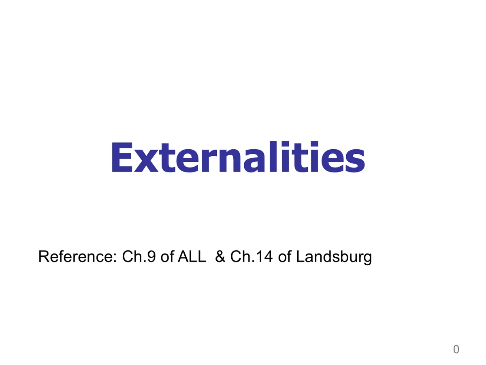
封面页。标题只有两个字：外部性（Externalities）。参考阅读标的是 Ch.9 of ALL 与 Ch.14 of Landsburg（Landsburg《价格理论与应用》第 9 版里这一章其实是第 13 章「External Costs and Benefits」，章节号对不上不必慌，内容就是这一套）。
一句话预告这一讲要干什么：前面十一讲我们反复用「均衡 = 最优」这个结论，这一讲开始拆它——当你的行为影响了旁观者，而价格没把这笔影响算进去，市场会给出一个错的产量，而且这个错不会自己消失。
幻灯片原文 / 板书
Externalities --- Reference: Ch.9 of ALL & Ch.14 of Landsburg
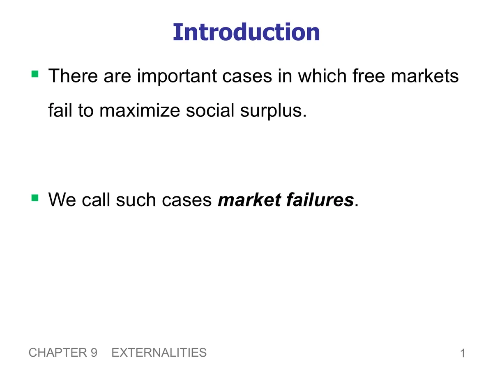
引言页只给一个判断：存在一些重要情形，自由市场不能最大化社会剩余（social surplus），这类情形叫市场失灵（market failure）。
注意措辞。市场失灵不是「市场很坏」，而是「在特定条件下，均衡产量不是最优产量」。前面讲供需时，我们默认「均衡」和「最优」是同一个点，因为买卖双方承担了这笔交易的全部成本与收益；这一讲要指出这个默认需要一个前提，而外部性恰好破坏它。所以第 9 章不是推翻前面，是给前面加一条边界。
幻灯片原文 / 板书
CHAPTER 9 EXTERNALITIES --- Introduction --- There are important cases in which free markets fail to maximize social surplus. We call such cases market failures.
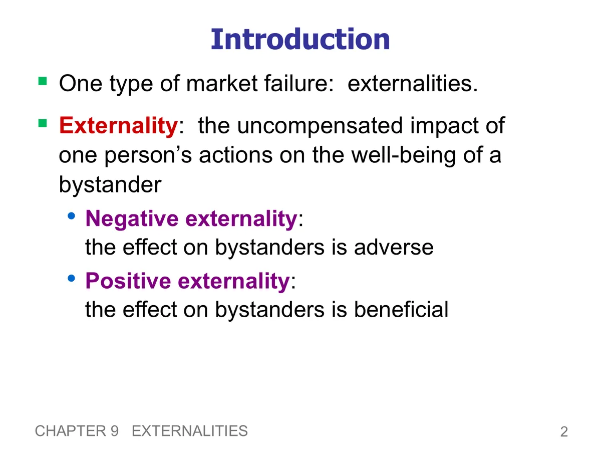
外部性（externality）的定义：一个人的行为对旁观者福利造成的、未获补偿的影响（the uncompensated impact of one person's actions on the well-being of a bystander）。
三个词要抠：
- 旁观者：不是交易双方，是站在交易外面的第三方。
- 影响：可正可负。
- 未补偿：价格里没有为这笔影响付过钱。
按方向分两类：负外部性——对旁观者不利；正外部性——对旁观者有利。
补一句帮助理解「未补偿」：如果工厂付钱给渔民，买下「排污的权利」，那笔影响就被补偿了，它不再是外部性——这恰恰是后面科斯那一节要做的事。
幻灯片原文 / 板书
CHAPTER 9 EXTERNALITIES --- Introduction --- One type of market failure: externalities. Externality: the uncompensated impact of one person’s actions on the well-being of a bystander Negative externality: the effect on bystanders is adverse Positive externality: the effect on bystanders is beneficial
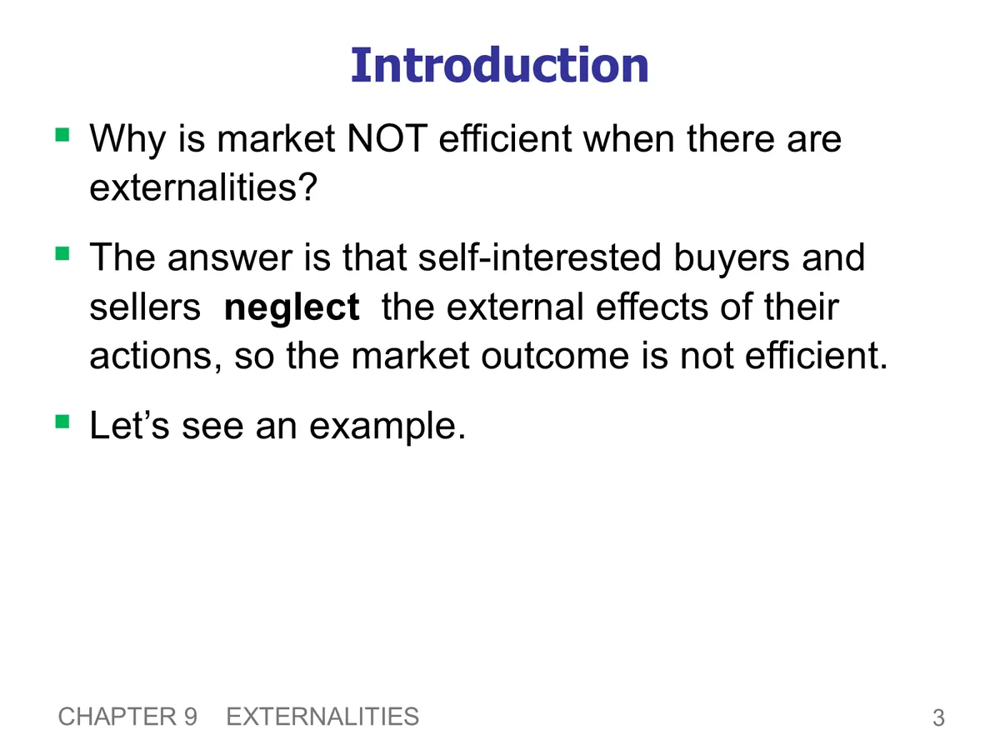
为什么有外部性时市场就不有效率？因为自利的买方和卖方会忽略自己行为的外部影响（neglect the external effects）。
市场价格传递的是私人信息：我买这加仑油值多少、我卖这加仑油花多少。它不传递「这加仑油让路人少吸一口干净空气」这种信息。于是均衡照样成立（给定价格，没人想改变自己的行为），但它是私人最优、社会非最优。
一句话：不是人坏，是账本不全。下面用一个例子把这句话画成图。
幻灯片原文 / 板书
CHAPTER 9 EXTERNALITIES --- Introduction --- Why is market NOT efficient when there are externalities? The answer is that self-interested buyers and sellers neglect the external effects of their actions, so the market outcome is not efficient. Let’s see an example.
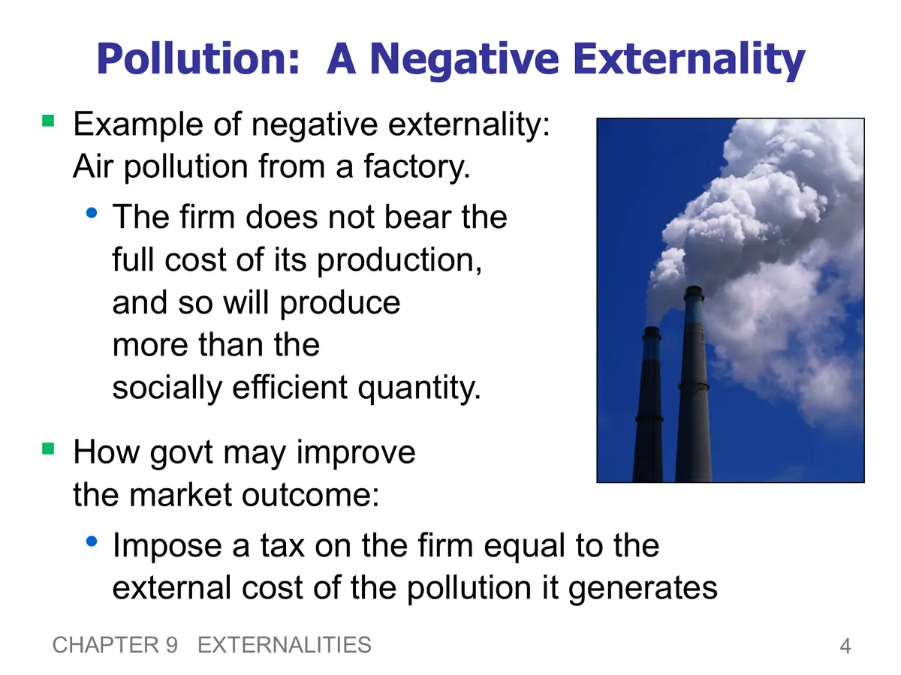
负外部性的标准例子：工厂排放的空气污染。
工厂付燃料、工资、设备、税，但不付附近居民多得的哮喘、被熏黑的墙、被毁的湖。它不承担自己生产的全部成本，于是产量会高于社会有效率的产量（produce more than the socially efficient quantity）。
政府可以怎么改：按污染的外部成本对工厂征税。这一页是本讲的压缩包——「成本漏算 → 产量过多 → 用税补上」，后面十几页都在展开这三步。先把这三步记住，再看图就不会迷路。
幻灯片原文 / 板书
CHAPTER 9 EXTERNALITIES --- Pollution: A Negative Externality --- Example of negative externality: Air pollution from a factory. The firm does not bear the full cost of its production, and so will produce more than the socially efficient quantity. How govt may improve the market outcome: Impose a tax on the firm equal to the external cost of the pollution it generates
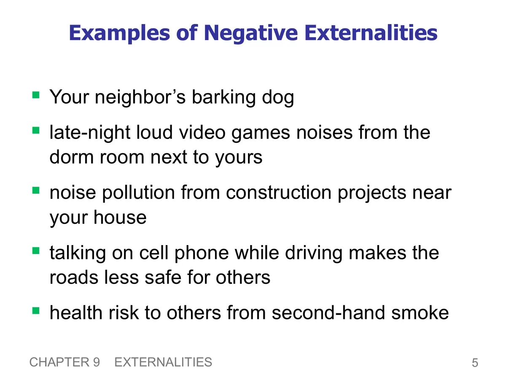
五个日常的负外部性，注意它们的共同结构：决策者拿到全部收益，成本有一部分落在别人身上。
- 邻居家的狗半夜叫
- 隔壁宿舍深夜外放视频
- 小区旁工地的施工噪音
- 开车时打电话，让路上的其他人更危险
- 二手烟，把健康风险转给旁人
共同点还有第二个：没有一笔交易让受害者「同意」承担这些成本。他们没被问过，也没拿到补偿——这正是「未补偿」的含义。你可以试着自己再补两个例子（宿舍楼道里堆杂物、深夜在居民区飙车），只要满足「收益归自己、成本归别人、价格不反映」，就是外部性。
幻灯片原文 / 板书
CHAPTER 9 EXTERNALITIES --- Examples of Negative Externalities --- Your neighbor’s barking dog late-night loud video games noises from the dorm room next to yours noise pollution from construction projects near your house talking on cell phone while driving makes the roads less safe for others health risk to others from second-hand smoke
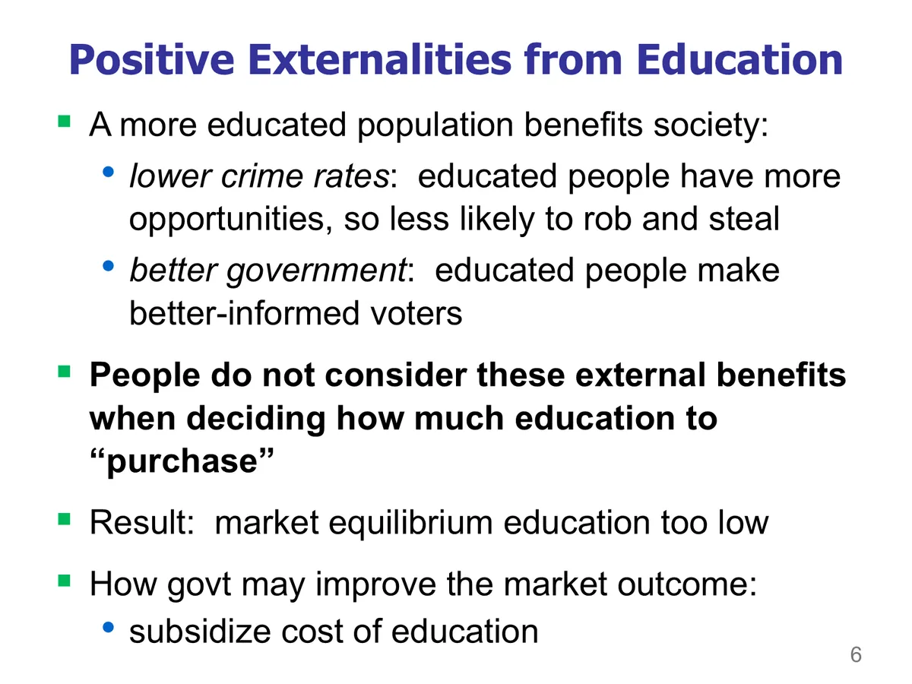
正外部性：教育。
受教育的人多了，社会白拿两笔好处：
- 犯罪率更低：受教育者有更多正当机会，抢劫偷窃的机会成本上升。
- 政府更好：选民见多识广，投票与监督的质量提高。
个人交学费时只算自己的工资溢价，不算这两笔，于是市场均衡的教育量偏低（too low）。政策对应：补贴教育成本，把外部收益塞回求学者的账本。注意这里补贴的理由不是「教育高尚」，而是「买家少算了一部分收益」。
幻灯片原文 / 板书
Positive Externalities from Education --- A more educated population benefits society: lower crime rates: educated people have more opportunities, so less likely to rob and steal better government: educated people make better-informed voters People do not consider these external benefits when deciding how much education to “purchase” Result: market equilibrium education too low How govt may improve the market outcome: subsidize cost of education
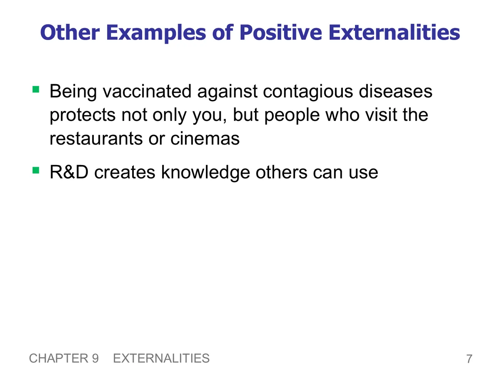
另外两个正外部性的例子：
- 接种疫苗：你打针主要保护自己，但同时保护了之后去餐厅、电影院的人——你少一个传染源，别人少一分风险。
- 研发（R&D）：新知识一旦产生，别人可以部分免费使用（看论文、逆向工程、跟着改进），创新者拿不回全部收益。
两例结构相同：私人收益 < 社会收益，所以产量偏少。注意「偏少」是相对社会最优说的，不是说绝对不够用；而且在疫苗这个例子里，正外部性还是「群体免疫」这种带临界点的东西——接种率太低时，外部收益几乎为零。
幻灯片原文 / 板书
CHAPTER 9 EXTERNALITIES --- Other Examples of Positive Externalities --- Being vaccinated against contagious diseases protects not only you, but people who visit the restaurants or cinemas R&D creates knowledge others can use
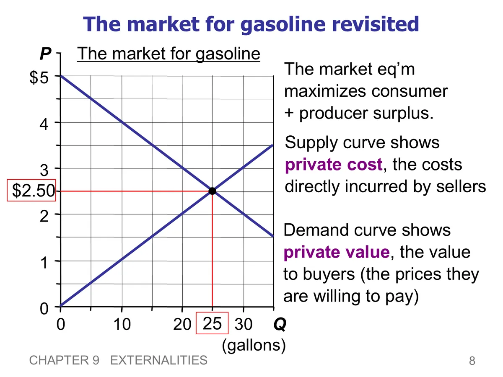
回到熟悉的市场：汽油市场。
这个结论之所以成立，是因为买家付的不超过他得到的价值、卖家收的不低于他付出的成本，而没有第三方被牵扯进来。两条曲线夹出的那块面积，就是这笔交易创造的全部社会价值。这一页先把「老结论」摆好，下一句就要拆它。
幻灯片原文 / 板书
CHAPTER 9 EXTERNALITIES --- The market for gasoline revisited --- Demand curve shows private value, the value to buyers (the prices they are willing to pay) --- Supply curve shows private cost, the costs directly incurred by sellers --- The market eq’m maximizes consumer + producer surplus.
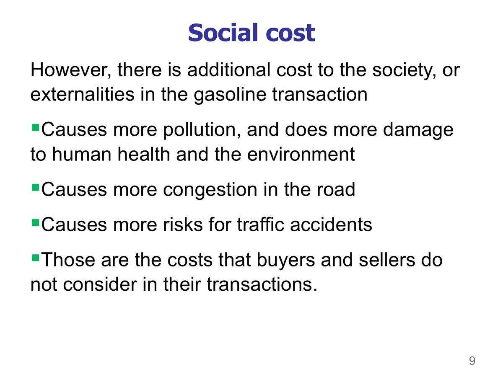
缺的那块叫社会成本。汽油交易还有额外成本：
- 更多污染，对健康与环境造成更大损害
- 更多道路拥堵
- 更高的事故风险
这些都是买卖双方在交易时都不考虑的成本——它们不进入任何人的账单，所以不影响任何人的出价。结果：私人成本曲线系统性地低于社会成本曲线，两条线之间的差额就是边际外部成本。
「系统性」三个字很重要：不是偶尔算错一笔，而是每生产一加仑就漏算一份，所以两条线是平行的一条缝，不是一个点。
幻灯片原文 / 板书
Social cost --- However, there is additional cost to the society, or externalities in the gasoline transaction Causes more pollution, and does more damage to human health and the environment Causes more congestion in the road Causes more risks for traffic accidents Those are the costs that buyers and sellers do not consider in their transactions.
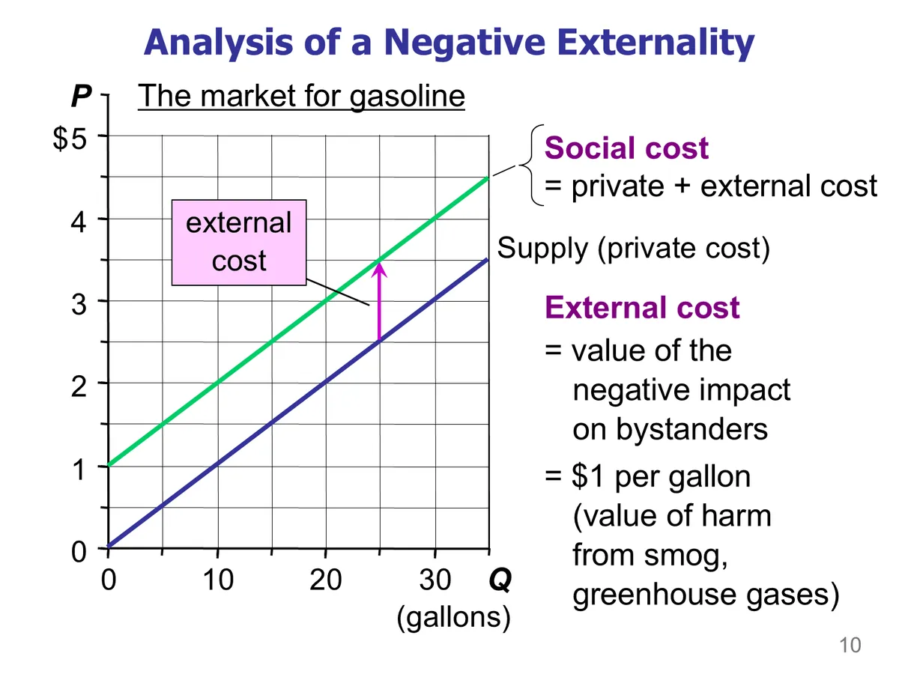
看图。横轴 Q（加仑），纵轴 P（美元/加仑）。
- 深蓝线 S 是私人成本。
- 绿线在 S 的正上方 $1，是社会成本 = 私人成本 + 外部成本，写成 MSC = MPC + 边际外部成本。
- 外部成本 = 每加仑 $1，即雾霾与温室气体造成的伤害价值。
重点：上移的是供给曲线，不是需求曲线。负外部性发生在生产侧——多生产一加仑，多一份排放。若把需求曲线往上移，你讲的就是「消费带来正外部性」的故事了，这是最常见的错解。另外注意那条缝的宽度是常数 $1，所以两条线平行。
幻灯片原文 / 板书
Analysis of a Negative Externality --- Supply (private cost) --- External cost = value of the negative impact on bystanders = $1 per gallon (value of harm from smog, greenhouse gases) --- Social cost = private + external cost
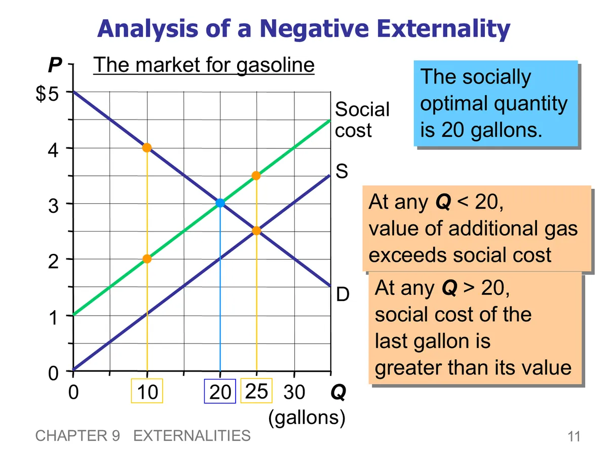
同一张图，先找社会最优。D 与绿色社会成本线的交点给出 Q = 20 加仑、P = $3。
为什么是 20？两条理由，互为反面：
- Q < 20 时，多一加仑的价值（D 的高度）高于它的社会成本，增产让总剩余变大。
- Q > 20 时，最后一加仑的社会成本高于其价值，减产让总剩余变大。
所以最优点就是「最后一单位的价值 = 最后一单位的社会成本」。看图上 Q=10 处：D 值 $4，社会成本 $2，中间 $2 的缺口就是「还该多生产」的信号；到 Q=20，缺口归零。
幻灯片原文 / 板书
CHAPTER 9 EXTERNALITIES --- Analysis of a Negative Externality --- D --- S --- Social cost --- The socially optimal quantity is 20 gallons. --- At any Q < 20, value of additional gas exceeds social cost --- At any Q > 20, social cost of the last gallon is greater than its value --- 25
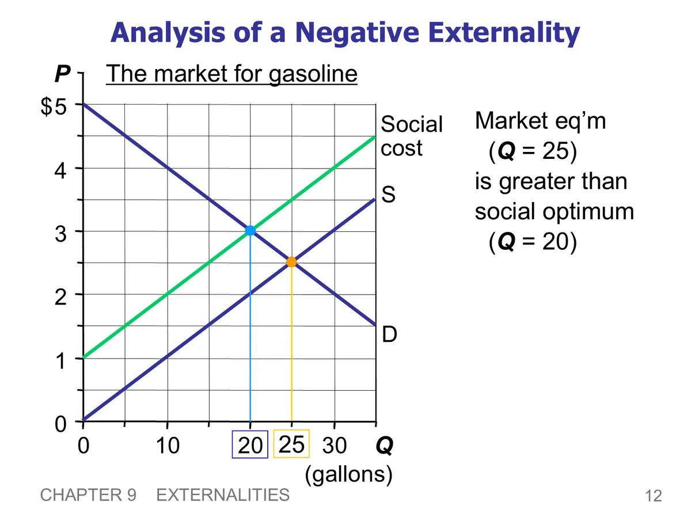
把市场均衡放上去：S 与 D 交于 Q = 25、P = $2.5，比社会最优的 20 多出 5 加仑。
多出来的这块就是无谓损失（deadweight loss）。看第 20 到 25 加仑：每一加仑的社会成本都高于买家价值，缺口从 0 拉大到 $1（Q=25 处社会成本 $3.5，价值 $2.5）。这块三角形夹在 D 与社会成本线之间，底 5 加仑、高 $1，面积 = ½ × 5 × 1 = $2.5。
$2.5 就是「多生产 5 加仑」让社会净亏的钱。注意它不在任何人的账单上，所以没人自动去消除它；而且它随着产量偏离而增大，偏离越远亏得越多。
幻灯片原文 / 板书
CHAPTER 9 EXTERNALITIES --- Analysis of a Negative Externality --- D --- S --- Social cost --- Market eq’m (Q = 25) is greater than social optimum (Q = 20) --- 25
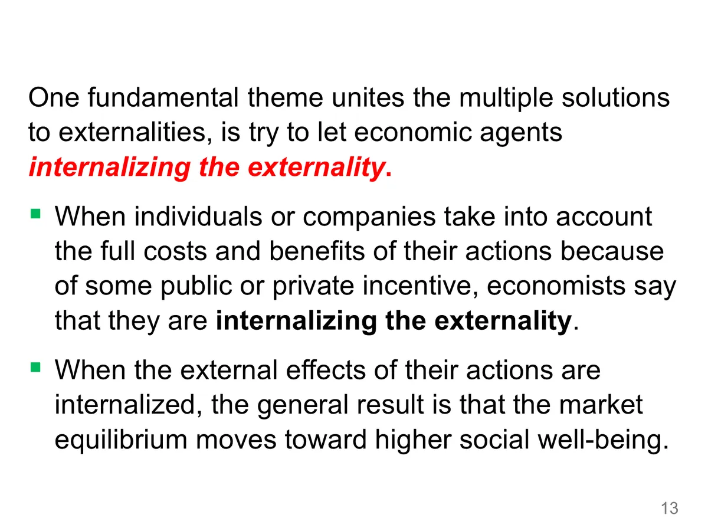
统一主题：外部性内部化（internalizing the externality）。
当个人或企业因为某种公共或私人激励，把行为的全部成本与收益都算进自己的决策，经济学家就说他把外部性内部化了。内部化之后的一般结果：市场均衡向社会福利更高的方向移动。
这句记住：它是后面所有方案的判据：征税、补贴、界定产权、发排污许可证，做法不同，本质都是「让决策者面对完整的账本」。判断一个政策好不好，就问它有没有做到这件事，而不是问它「看起来是否仁慈」。
幻灯片原文 / 板书
One fundamental theme unites the multiple solutions to externalities, is try to let economic agents internalizing the externality. When individuals or companies take into account the full costs and benefits of their actions because of some public or private incentive, economists say that they are internalizing the externality. When the external effects of their actions are internalized, the general result is that the market equilibrium moves toward higher social well-being.
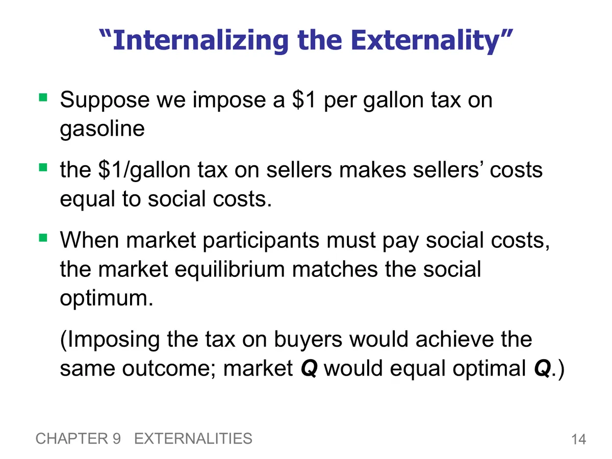
具体做法：对汽油征 $1/加仑的税。
- 税加在卖家身上，卖家的成本曲线上移 $1，正好与社会成本线重合。
- 新的交点就是 Q = 20，与社会最优一致。
- 结论：当市场参与者必须支付社会成本时，市场均衡就等于社会最优。
还有一句容易漏：把同样的税加在买方身上，结果一样——Q 仍然等于最优产量。谁付税只影响税负落在谁头上（买家多付还是卖家少收），不影响数量。这就是「税负归属」与「效率」两件事要分开看。
幻灯片原文 / 板书
CHAPTER 9 EXTERNALITIES --- “Internalizing the Externality” --- Suppose we impose a $1 per gallon tax on gasoline the $1/gallon tax on sellers makes sellers’ costs equal to social costs. When market participants must pay social costs, the market equilibrium matches the social optimum. (Imposing the tax on buyers would achieve the same outcome; market Q would equal optimal Q.)
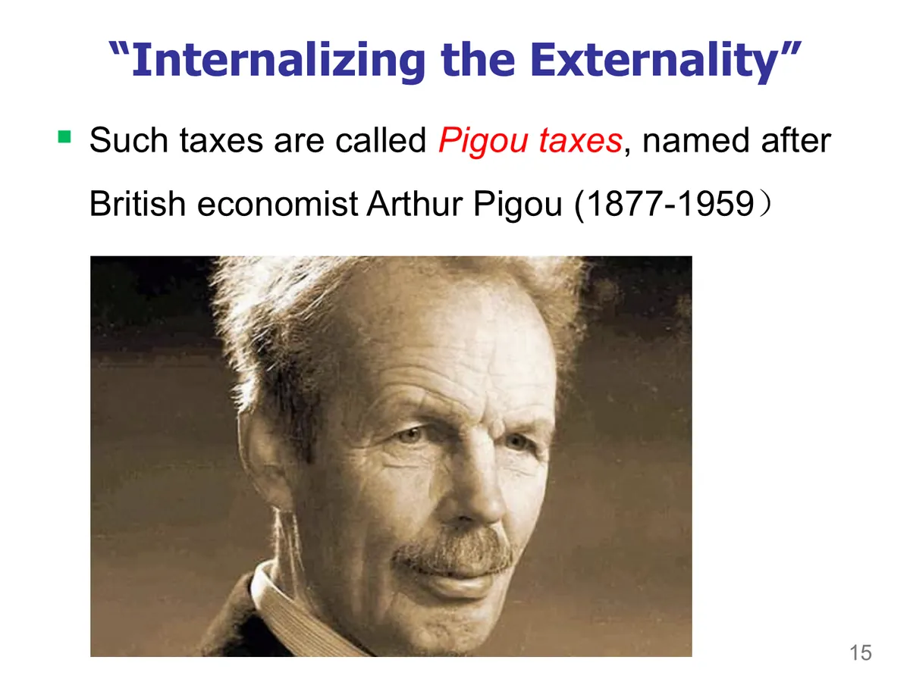
这类「为纠正外部性而设的税」叫庇古税（Pigou tax，也写 Pigouvian tax），得名于英国经济学家 Arthur Pigou（1877–1959）。
他的想法很朴素：既然市场把外部成本漏掉了，就用税把这笔成本「塞回」决策者的账单，让他自己觉得「多生产一单位很贵」。
考点：庇古税的理想税率 = 边际外部成本，不是随便一个税率，也不是「能收多少收多少」。税率定低了产量还是过多，定高了产量会掉到最优以下，同样亏。所以庇古税不是财政工具，是价格工具。
幻灯片原文 / 板书
“Internalizing the Externality” --- Such taxes are called Pigou taxes, named after British economist Arthur Pigou (1877-1959）
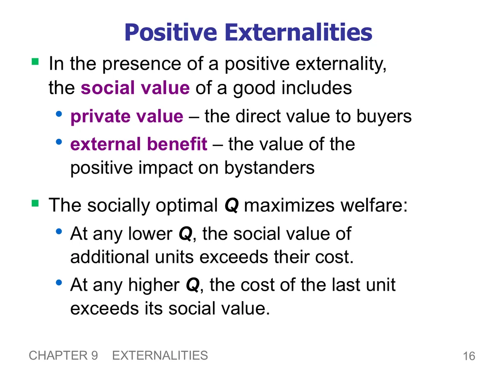
正外部性的对称分析。社会价值 = 私人价值 + 外部收益，即 MSB = MPB + 边际外部收益（marginal social benefit = marginal private benefit + marginal external benefit）。
社会最优 Q 最大化福利：
- 在 Q* 以下，多一单位的社会价值高于其成本，该增产。
- 在 Q* 以上，最后一单位的成本高于其社会价值，该减产。
注意这次上移的是价值（需求）曲线——正外部性意味着「别人也白得好处」，所以社会比私人更愿意多要。买家只为自己那一份收益出价，旁观者那部分收益没人替他出价，需求曲线因此偏低。
幻灯片原文 / 板书
CHAPTER 9 EXTERNALITIES --- Positive Externalities --- In the presence of a positive externality, the social value of a good includes private value – the direct value to buyers external benefit – the value of the positive impact on bystanders The socially optimal Q maximizes welfare: At any lower Q, the social value of additional units exceeds their cost. At any higher Q, the cost of the last unit exceeds its social value.
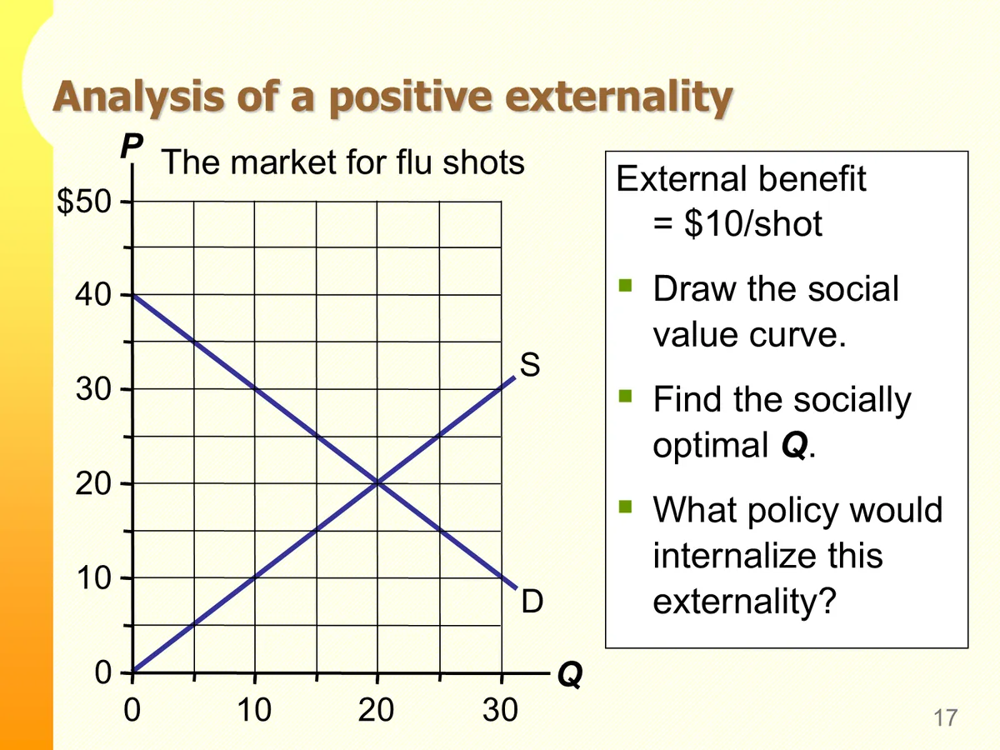
图：流感疫苗市场。横轴 Q（支），纵轴 P（美元）。
- D 是私人价值，从 (0, 40) 一路降到 (40, 0)。
- S 是私人成本，从原点上升，与 D 交于 Q = 20、P = $20——这是市场均衡。
- 外部收益 = $10/支：你打针，旁人也少被传染。
三个任务：画出社会价值曲线（把 D 整体上移 $10）、找出社会最优 Q、说清用什么政策把它内部化。先自己动手，再看下一页。动手时想一件事：$10 不是「政府愿意出 10 元」，而是「每多一支疫苗，旁观者多得 10 元的好处」，所以整条价值曲线都要上移。
幻灯片原文 / 板书
Analysis of a positive externality --- 17 --- The market for flu shots --- D --- S --- External benefit = $10/shot Draw the social value curve. Find the socially optimal Q. What policy would internalize this externality?
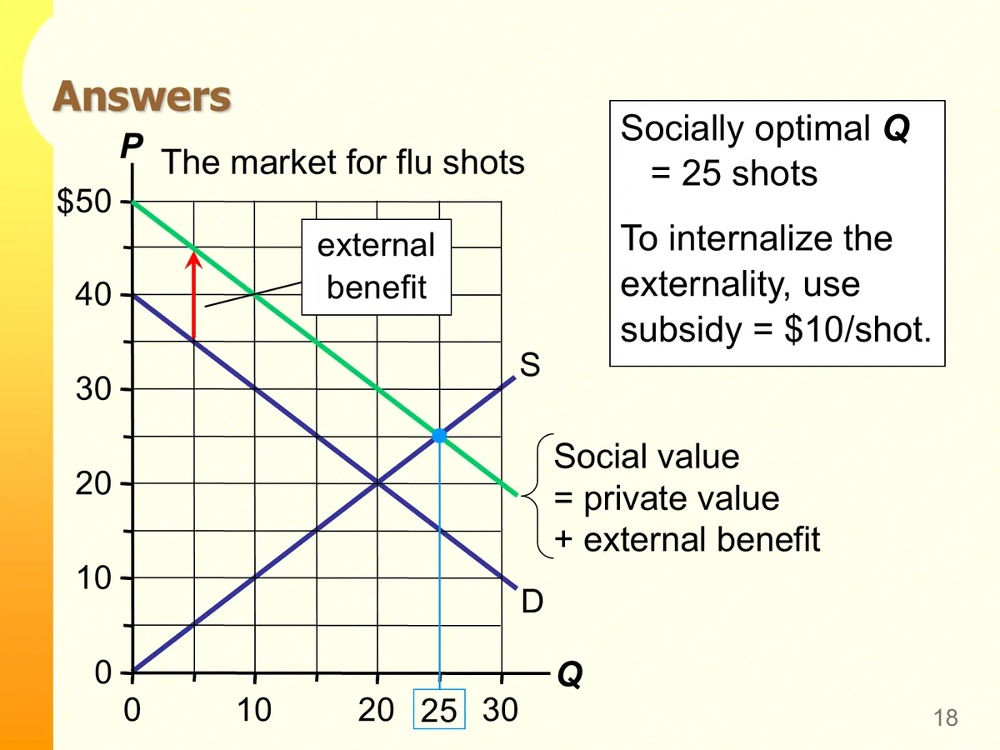
答案：
- 社会价值曲线 = D 上移 $10，从 (0, 50) 到 (50, 0)。
- 它与 S 交于 Q = 25、P = $25，所以社会最优是 25 支，比市场均衡的 20 支多 5 支。
- 政策：每支补贴 $10。
补贴落地后的价格要会算：卖家实收 $25，买家实付 $15，差额 $10 由财政补上。为什么必须补满 $10？因为要弥补的是每支的外部收益，补少了产量仍然不足；补多了产量会超过 25 支，又走到另一边。
再算一笔账：多出来的 5 支，每支的社会价值比成本高一点，把这块三角形加总，就是补贴带来的社会福利增量；而 $10 的补贴支出里，有一部分只是从纳税人转到买家手里，不算社会成本。补贴的净收益来自「数量对了」，不来自「钱给了谁」。
幻灯片原文 / 板书
Answers --- Socially optimal Q = 25 shots To internalize the externality, use subsidy = $10/shot. --- 18 --- The market for flu shots --- D --- S --- Social value = private value + external benefit
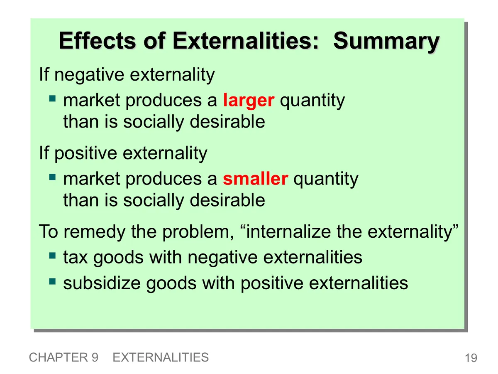
总结成一张表，考试就靠它：
| 外部性类型 | 市场产量相对社会最优 | 政策方向 |
|---|---|---|
| 负外部性 | 过多（Q 市场 > Q 最优） | 征税 |
| 正外部性 | 过少（Q 市场 < Q 最优） | 补贴 |
怎么读：先判方向（多了还是少了），再选工具（加成本还是加收益）。两步都做对，才叫「内部化外部性」；方向判反，政策会把事情弄得更糟——比如给污染者补贴，等于花钱鼓励排污。
判断方向的快捷办法：问一句「社会成本（或收益）比私人多出来的那部分，现在有没有人付钱」。没人付，且是成本，产量就过多；没人收，且是收益，产量就过少。
幻灯片原文 / 板书
CHAPTER 9 EXTERNALITIES --- If negative externality market produces a larger quantity than is socially desirable If positive externality market produces a smaller quantity than is socially desirable To remedy the problem, “internalize the externality” tax goods with negative externalities subsidize goods with positive externalities --- Effects of Externalities: Summary
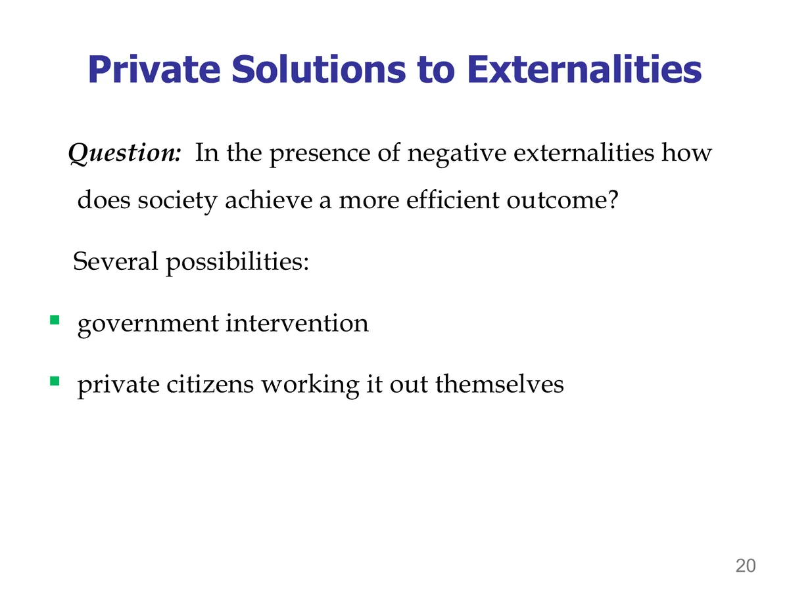
换问题：有负外部性时，社会怎样才能达到更有效率的结果？课件给两条路：一是政府干预（government intervention），二是私人自行协商解决（private citizens working it out themselves）。
多数人只想到第一条。这一节的任务是让你看见第二条有多强——强到科斯敢说「政府不必要」；然后再看它什么时候失效。
路线图是这样的：先用一个电厂与渔民的例子把「私人谈判」算成钱，再给出科斯定理，最后列出交易成本这个总闸门。两条路也不是互斥的，现实里常常先谈，谈不成才管制。
幻灯片原文 / 板书
Private Solutions to Externalities
---
Question: In the presence of negative externalities how does society achieve a more efficient outcome?
Several possibilities:
government intervention
private citizens working it out themselves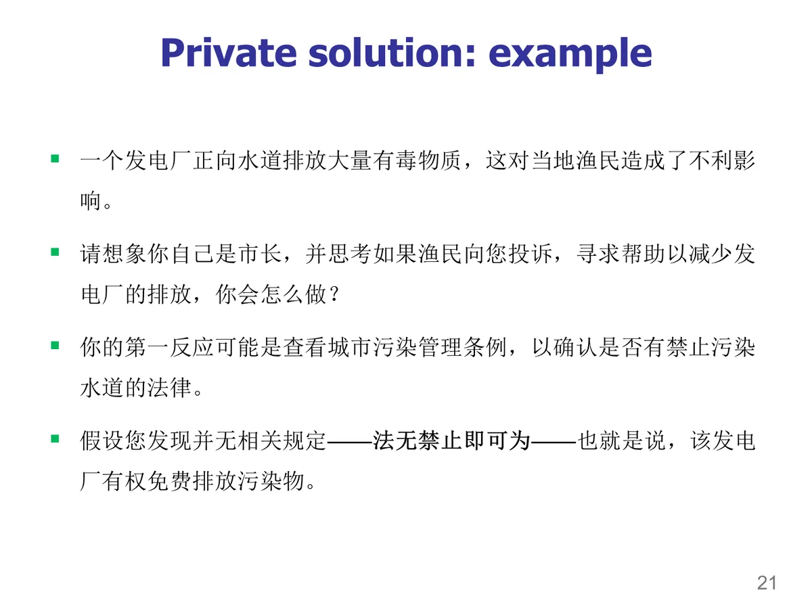
一个具体场景。某发电厂正向水道排放大量有毒物质，下游渔民受损。假设你是市长，渔民来投诉。
你的第一反应：翻城市污染管理条例，看有没有禁止排污的条文。结果发现没有相关规定——法无禁止即可为，也就是说，该发电厂有权免费排放污染物。
注意这个设定的分量：法律空白等于把排污权默认判给了电厂。所以市长真正要回答的不是「谁道德上更该让」，而是「这条河的权利该归谁、归了之后双方会怎么谈」。下一页开始谈。
幻灯片原文 / 板书
Private solution: example --- 一个发电厂正向水道排放大量有毒物质，这对当地渔民造成了不利影响。 请想象你自己是市长，并思考如果渔民向您投诉，寻求帮助以减少发电厂的排放，你会怎么做？ 你的第一反应可能是查看城市污染管理条例，以确认是否有禁止污染水道的法律。 假设您发现并无相关规定——法无禁止即可为——也就是说，该发电厂有权免费排放污染物。
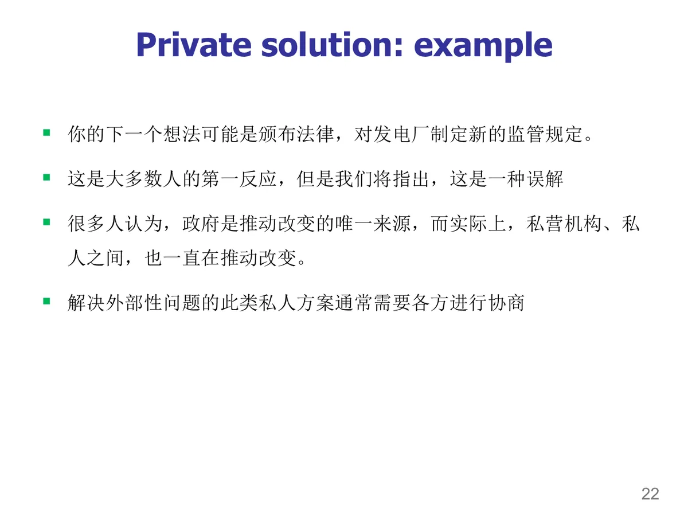
你的第二个念头：颁布新法规，管制电厂。课件明确说，这是大多数人的第一反应，也是一种误解——很多人以为政府是推动改变的唯一来源，而实际上私人之间一直在推动改变。
私人方案的核心动作是协商（bargaining）：受损的一方和施害的一方直接谈条件、互相付钱。它不一定需要新法律，也不一定需要谁「认错」，只需要一笔双方都愿意做的交易。
误解的根源，是把「市场失灵」直接等同于「政府必须出手」。这一节要证明这个等号不成立。
幻灯片原文 / 板书
Private solution: example --- 你的下一个想法可能是颁布法律，对发电厂制定新的监管规定。 这是大多数人的第一反应，但是我们将指出，这是一种误解 很多人认为，政府是推动改变的唯一来源，而实际上，私营机构、私人之间，也一直在推动改变。 解决外部性问题的此类私人方案通常需要各方进行协商
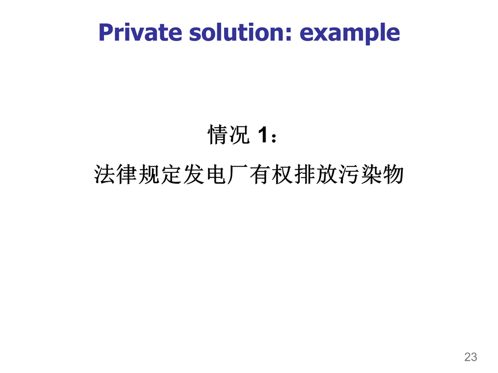
先看情况 1：法律规定发电厂有权排放污染物。
这是对渔民最不利的起点——受害者在法律上站不住脚。现实里很多国家早期的环境法就是这样：谁先排污，谁就有理。
接下来要问的不是「谁对谁错」，而是「有没有一笔双方都愿意做的交易」。
幻灯片原文 / 板书
情况 1： 法律规定发电厂有权排放污染物 --- Private solution: example
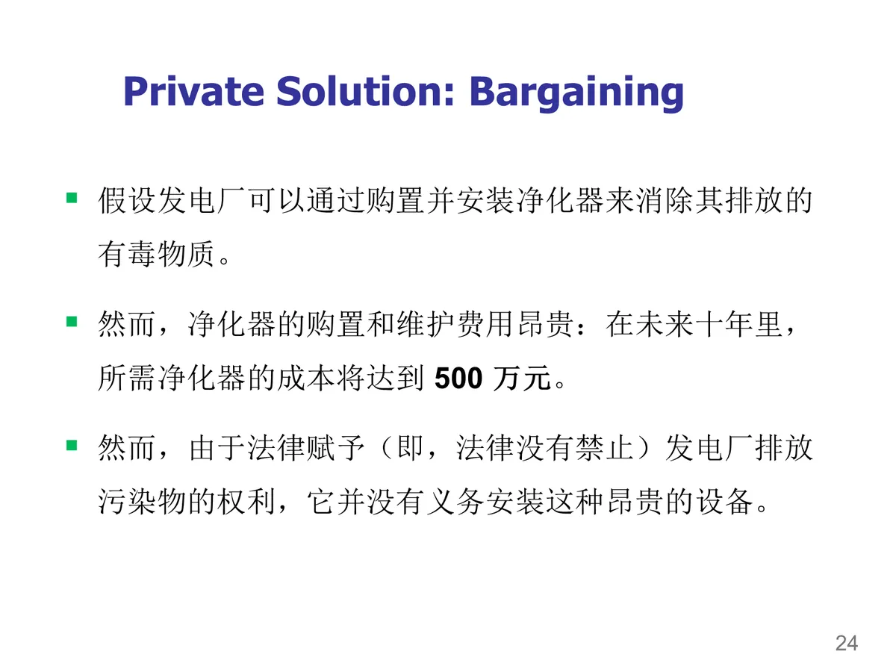
假设电厂有技术方案：装净化器可以消除有毒排放。设备购置加未来十年维护，共 500 万元，很贵。
而法律既然允许排污，电厂没有义务装。所以如果没人来找它，它就不装——这是标准的私人成本决策：掏 500 万，自己一分钱好处也没有，私人净收益是 −500 万。
注意这 500 万是十年累计的现值，不是一年的支出；把它和渔民那边的收益放在同一个时间口径上比较，才是公平的算法。
幻灯片原文 / 板书
Private Solution: Bargaining --- 假设发电厂可以通过购置并安装净化器来消除其排放的有毒物质。 然而，净化器的购置和维护费用昂贵：在未来十年里，所需净化器的成本将达到 500 万元。 然而，由于法律赋予（即，法律没有禁止）发电厂排放污染物的权利，它并没有义务安装这种昂贵的设备。
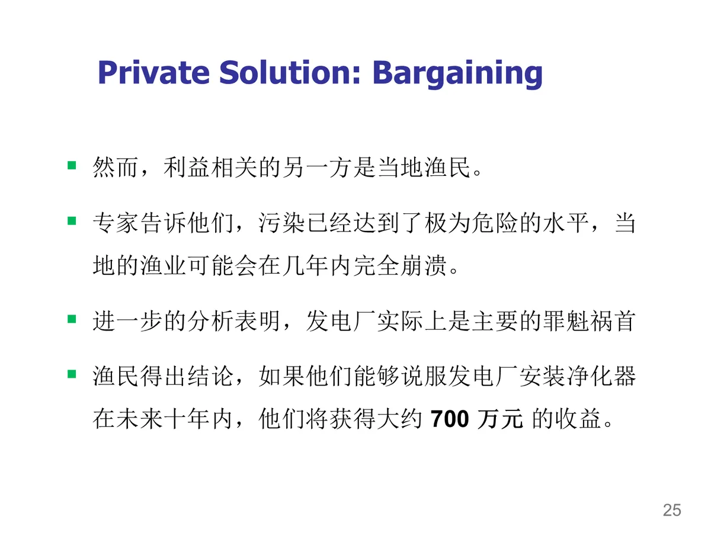
另一方是渔民。专家说污染已到极为危险的水平，当地渔业几年内可能完全崩溃，而电厂是主要责任方。
渔民算了一笔账：如果能说服电厂装净化器，未来十年他们能获得约 700 万元的收益。
于是同一件事在两个账本上是：电厂成本 500 万，渔民收益 700 万。这两个数字的差，就是谈判的空间。渔民为什么不自建净水设施？因为污染源在上游，他们无论花多少钱都治不了根，只能去和电厂谈——这也说明外部性的解决往往要求双方坐到一张桌子上。
幻灯片原文 / 板书
然而，利益相关的另一方是当地渔民。 专家告诉他们，污染已经达到了极为危险的水平，当地的渔业可能会在几年内完全崩溃。 进一步的分析表明，发电厂实际上是主要的罪魁祸首 渔民得出结论，如果他们能够说服发电厂安装净化器在未来十年内，他们将获得大约 700 万元 的收益。 --- Private Solution: Bargaining
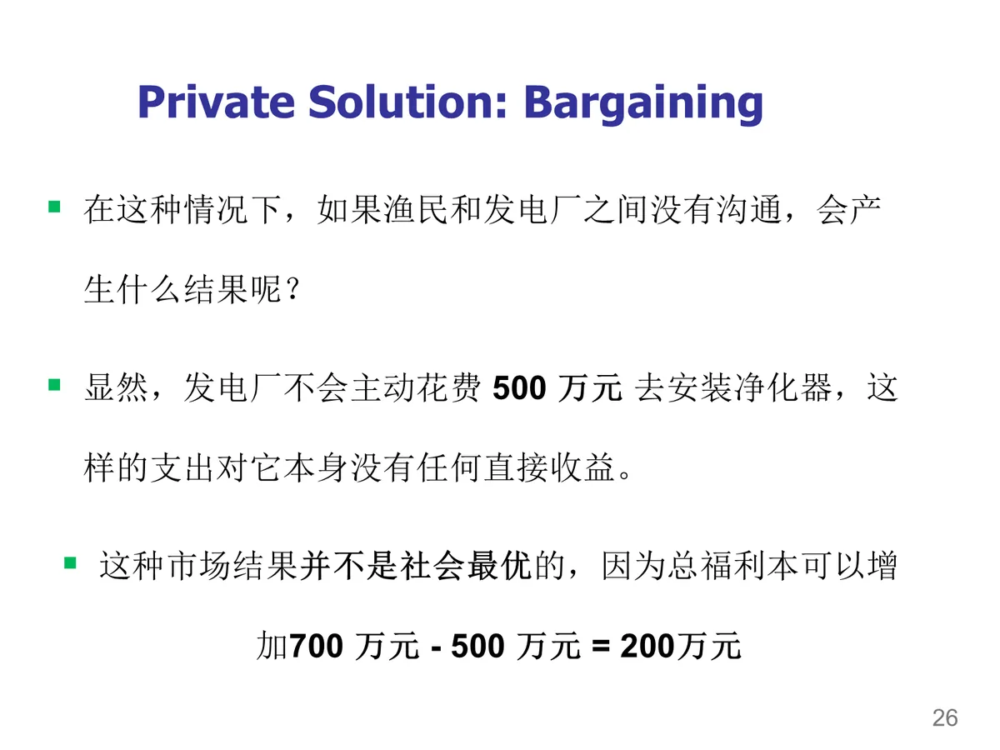
如果双方不沟通会怎样？电厂不会主动掏 500 万——支出是它的，收益全是渔民的。这个结果不是社会最优：社会总福利本来可以增加 700 万 − 500 万 = 200 万元。
注意这 200 万是净增量，不是转移。它是「装净化器」比「不装」多创造出来的社会价值，不是从谁口袋里掏给谁。也正因为它是一块没人认领的净增量，只要双方能谈，就一定有人想去把它捡起来——这正是私人解决外部性的动力来源。
幻灯片原文 / 板书
在这种情况下，如果渔民和发电厂之间没有沟通，会产生什么结果呢？ 显然，发电厂不会主动花费 500 万元 去安装净化器，这样的支出对它本身没有任何直接收益。 这种市场结果并不是社会最优的，因为总福利本可以增加700 万元 - 500 万元 = 200万元 --- Private Solution: Bargaining
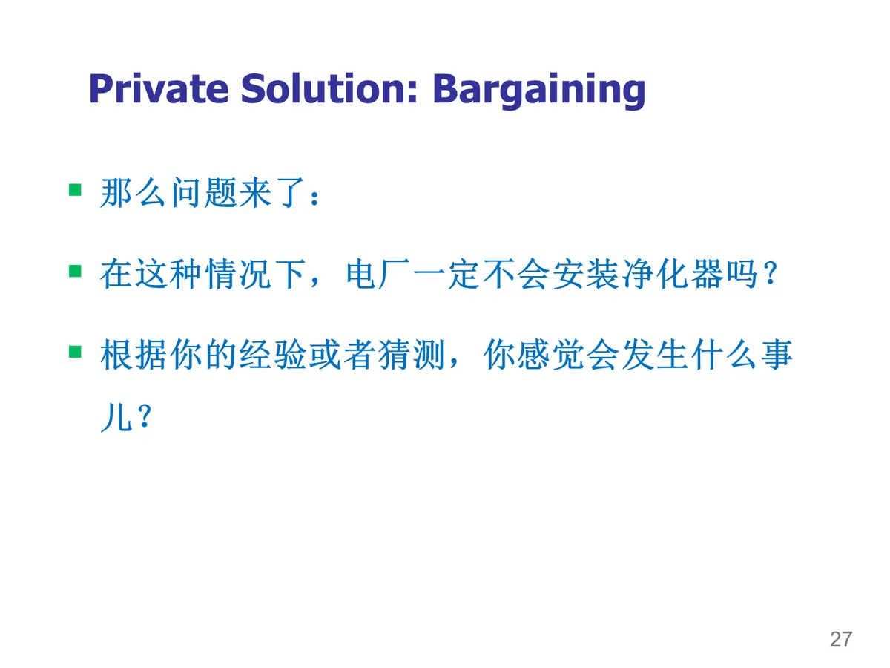
那么问题来了：电厂一定不会装吗？
先别急着答，凭经验或者直觉猜一下接下来会发生什么。提示已经给你了：渔民手里握着 700 万的收益，电厂手里压着 500 万的成本，中间那 200 万的缺口，是双方可以合力赚到的钱。
再想一层：谈判不一定由受害者发起。电厂也可以反过来「卖」排污权——你给我一笔钱，我就装设备。方向不同，成交区间还是 500 万到 700 万。
幻灯片原文 / 板书
那么问题来了： 在这种情况下，电厂一定不会安装净化器吗？ 根据你的经验或者猜测，你感觉会发生什么事儿？ --- Private Solution: Bargaining
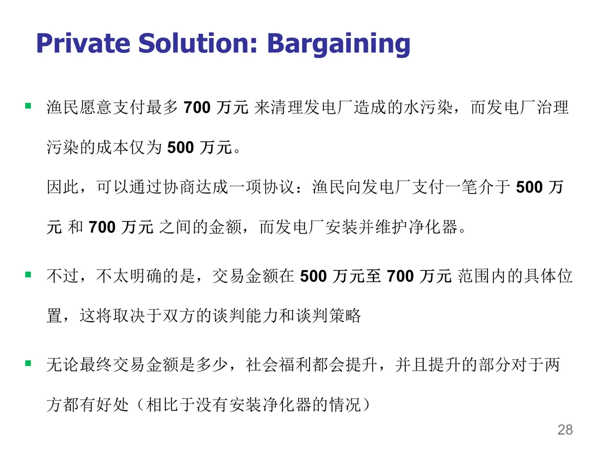
协商结果：渔民最多愿付 700 万，电厂最少要 500 万，于是任何介于 500 万与 700 万之间的金额都能成交，电厂装净化器。
具体落在哪一点，取决于双方的谈判能力与策略（谁更急、谁信息多、谁耗得起）。但无论成交价是多少：
- 净化器会装上，污染消失；
- 社会福利提高 200 万；
- 双方都比「不装」更好——这就是双赢的确切含义。
成交价只决定这 200 万怎么分：价格越靠近 500 万，渔民留得越多；越靠近 700 万，电厂拿得越多。效率和分配在这里第一次被清楚地分开。
幻灯片原文 / 板书
渔民愿意支付最多 700 万元 来清理发电厂造成的水污染，而发电厂治理污染的成本仅为 500 万元。 因此，可以通过协商达成一项协议：渔民向发电厂支付一笔介于 500 万元 和 700 万元 之间的金额，而发电厂安装并维护净化器。 不过，不太明确的是，交易金额在 500 万元至 700 万元 范围内的具体位置，这将取决于双方的谈判能力和谈判策略 无论最终交易金额是多少，社会福利都会提升，并且提升的部分对于两方都有好处（相比于没有安装净化器的情况） --- Private Solution: Bargaining
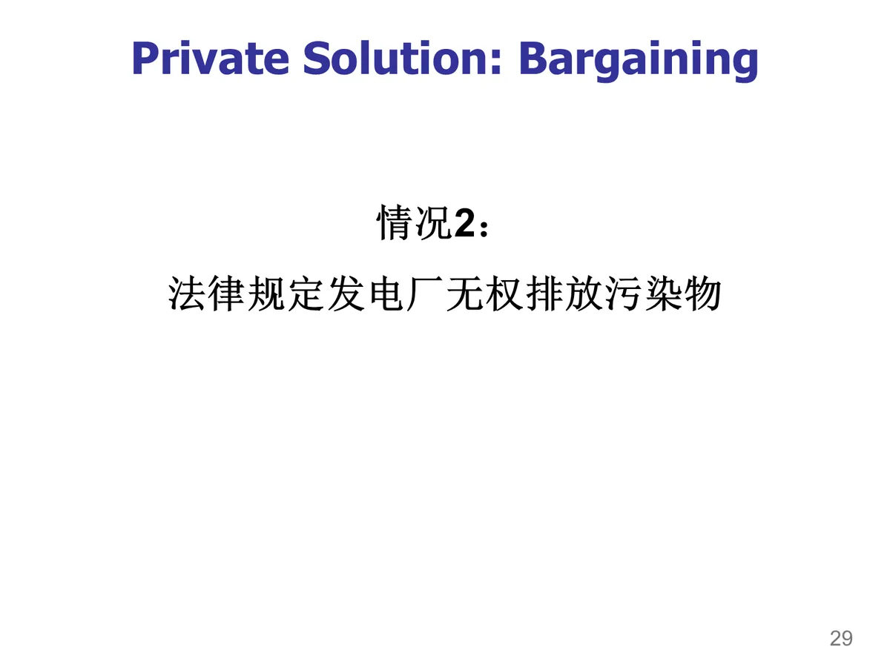
再看情况 2：法律规定发电厂无权排放污染物。
起点完全反过来：这回电厂违法，渔民占理。奇怪的是，最后的产量结果会一模一样——但钱的流向反过来，而且这次不需要谈判。
幻灯片原文 / 板书
Private Solution: Bargaining --- 情况2： 法律规定发电厂无权排放污染物
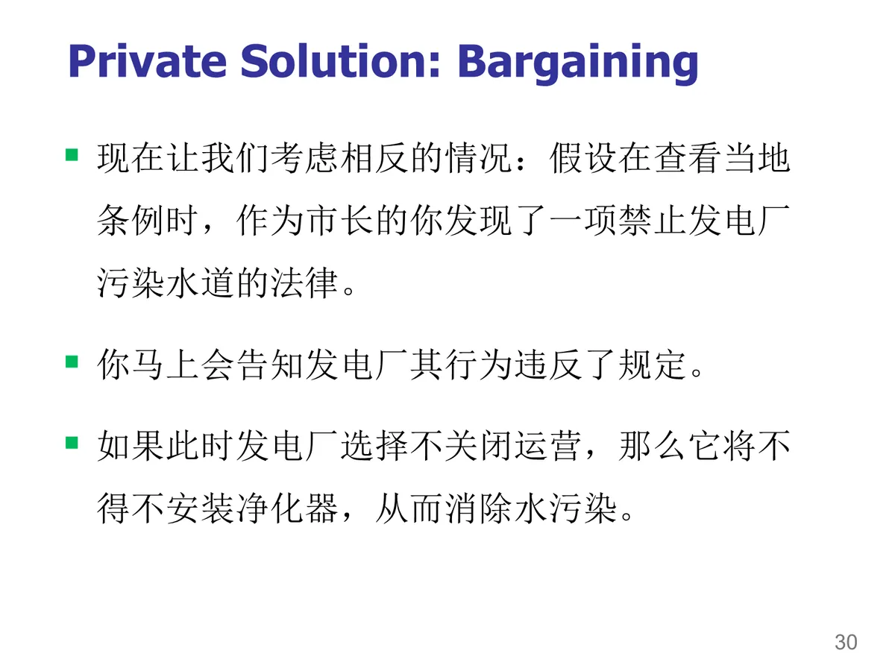
作为市长，你查到禁止排污的法律，告知电厂违规。电厂若不想关门，就必须装净化器，从而消除水污染。
算账：电厂掏 500 万，渔民白得 700 万的好处，社会净增 200 万——和情况 1 的净增量完全相同。
差别全在分配上：这回 500 万全额由电厂承担，渔民一分钱不付。所以「法律把权利判给谁」改变的是谁富谁穷，不改变装不装。
注意这里没有谈判，也就没有交易成本——这正是科斯定理的第二个前提被满足的样子：权利清楚、执行免费，于是结果直接等于效率结果。现实里往往两个前提都只满足一半，所以才需要下一页的比较。
幻灯片原文 / 板书
现在让我们考虑相反的情况：假设在查看当地条例时，作为市长的你发现了一项禁止发电厂污染水道的法律。 你马上会告知发电厂其行为违反了规定。 如果此时发电厂选择不关闭运营，那么它将不得不安装净化器，从而消除水污染。 --- Private Solution: Bargaining
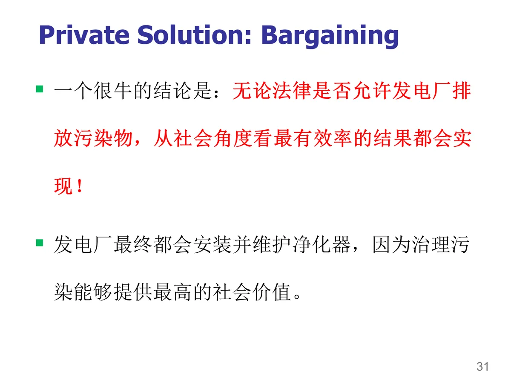
一个很漂亮的结论：无论法律是否允许电厂排污，从社会角度看最有效率的结果都会实现。
电厂最终都会装净化器，因为治污提供的社会价值（700 万）高于成本（500 万）。变的不是「装不装」，而是分配：
- 情况 1：渔民付钱给电厂（500 万到 700 万之间），渔民仍净赚；
- 情况 2：电厂自己承担 500 万。
效率一样，谁富谁穷不一样。这个区分后面还会反复出现，也是科斯定理最容易被误读的地方——它讲效率，不讲公平。
幻灯片原文 / 板书
一个很牛的结论是：无论法律是否允许发电厂排放污染物，从社会角度看最有效率的结果都会实现！ 发电厂最终都会安装并维护净化器，因为治理污染能够提供最高的社会价值。 --- Private Solution: Bargaining
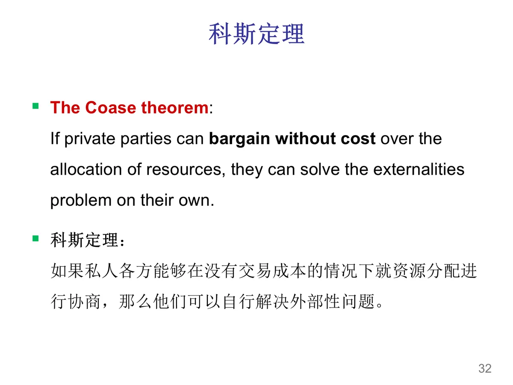
这就是科斯定理（Coase theorem）：如果私人各方能够在没有交易成本的情况下就资源配置进行协商，他们可以自行解决外部性问题。
两个前提要划重点：
- 权利（产权）是明确的：谁有权排污、谁有权享受清静，必须说得清，否则无从谈价。
- 交易成本为零或足够低：谈判、签约、执行都不贵。
少了任何一条，定理就不保证成立——下一节专门讲它怎么坏掉。还要注意定理的措辞是「可以自行解决」，不是「一定会解决」，因为谈判还可能因为策略性僵持而破裂。
幻灯片原文 / 板书
科斯定理 --- The Coase theorem: If private parties can bargain without cost over the allocation of resources, they can solve the externalities problem on their own. 科斯定理： 如果私人各方能够在没有交易成本的情况下就资源分配进行协商，那么他们可以自行解决外部性问题。
这一页是罗纳德·科斯（Ronald Coase，1910–2013）的照片，1991 年诺贝尔经济学奖得主。
他的贡献不是数学，而是一个反问：为什么一定要政府出手？如果双方能谈，且谈的成本足够低，外部性会自己消失。
两句提醒：科斯定理说的是效率，不是公平——它不保证结果让受害者满意；它也不说「政府永远不该管」，只说「先看看私人能不能谈」。科斯后来还写过「社会成本问题」一文，核心就是权利的相互性：禁止工厂排污，也是在剥夺工厂生产的权利。
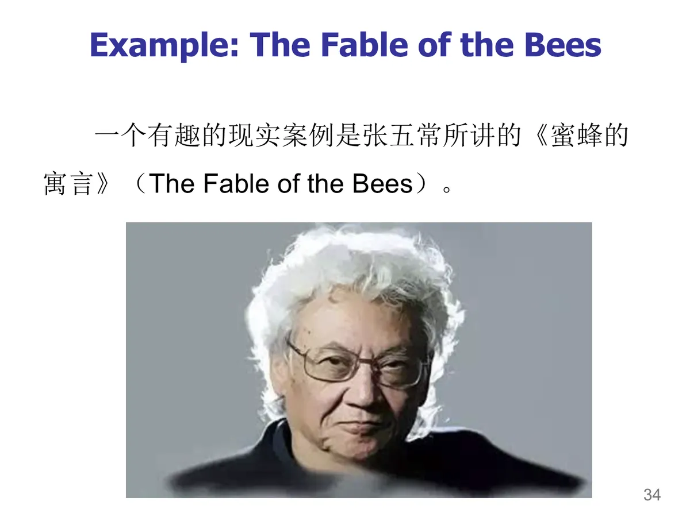
一个有趣的现实案例：张五常讲的《蜜蜂的寓言》（The Fable of the Bees）。
故事里有两类生产者——养蜂人和果园主。它之所以是好教材，是因为这里的外部性是双向的，教科书的标准配方（找出施害者、向他征税）在这里会失灵。
幻灯片原文 / 板书
Example: The Fable of the Bees --- 一个有趣的现实案例是张五常所讲的《蜜蜂的 寓言》（The Fable of the Bees）。
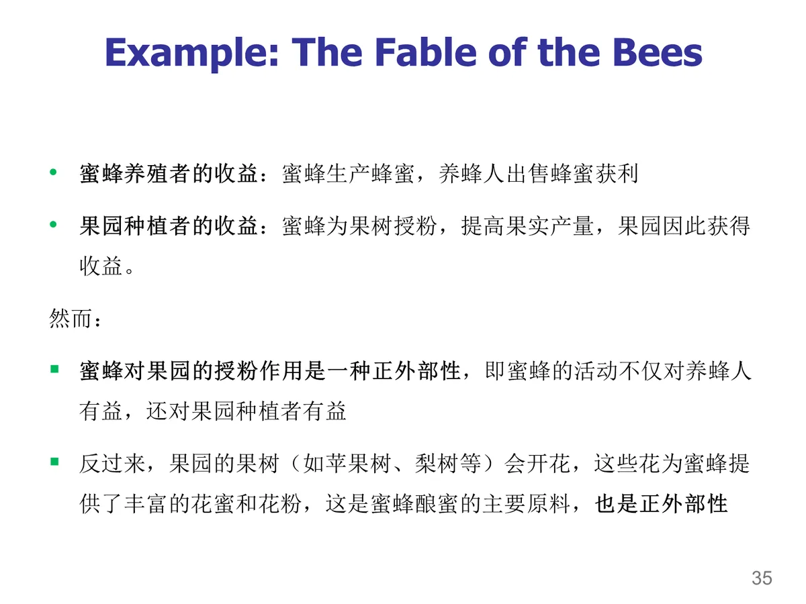
两边的收益：
- 养蜂人：蜜蜂酿蜜，卖蜂蜜获利。
- 果园主：蜜蜂为果树授粉，提高果实产量，果园因此增收。
关键在于两笔正外部性同时存在：
- 蜜蜂给果树授粉，是养蜂人送给果园主的好处；
- 果树开花提供花蜜花粉，是果园主送给养蜂人的好处（这是酿蜜的主要原料）。
谁也不是单纯的施害者或受害者——这打破了「一方污染、一方受害」的模板。当外部性是双向的，任何单向的税或补贴都会顾此失彼。
幻灯片原文 / 板书
Example: The Fable of the Bees --- 蜜蜂养殖者的收益：蜜蜂生产蜂蜜，养蜂人出售蜂蜜获利 果园种植者的收益：蜜蜂为果树授粉，提高果实产量，果园因此获得收益。 然而： 蜜蜂对果园的授粉作用是一种正外部性，即蜜蜂的活动不仅对养蜂人有益，还对果园种植者有益 反过来，果园的果树（如苹果树、梨树等）会开花，这些花为蜜蜂提供了丰富的花蜜和花粉，这是蜜蜂酿蜜的主要原料，也是正外部性
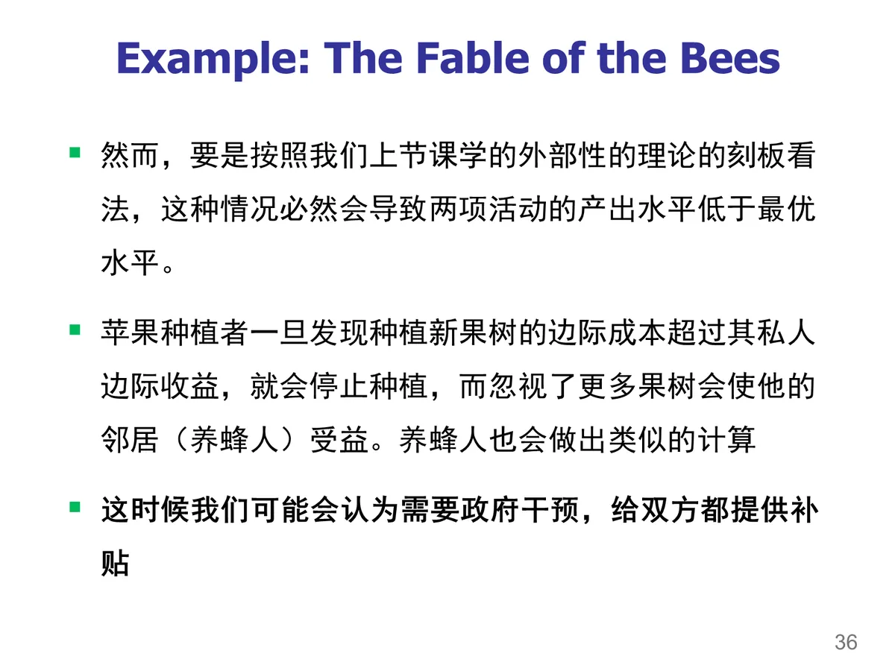
按教科书的刻板推理：果园主种树只算自己的边际收益，不算「多种一棵树让邻居的蜜蜂多酿蜜」，所以种得太少；养蜂人也一样算，所以养得太少。
结论似乎是：两个市场都产出不足，政府应该给双方都发补贴。
这个推理每一步都没错。它的隐藏前提是：双方不合作。一旦允许他们签约，两家就会把「我多做的事让你多赚的钱」写进合同，补贴就成了多余。下一页去看现实。
幻灯片原文 / 板书
Example: The Fable of the Bees --- 然而，要是按照我们上节课学的外部性的理论的刻板看法，这种情况必然会导致两项活动的产出水平低于最优水平。 苹果种植者一旦发现种植新果树的边际成本超过其私人边际收益，就会停止种植，而忽视了更多果树会使他的邻居（养蜂人）受益。养蜂人也会做出类似的计算 这时候我们可能会认为需要政府干预，给双方都提供补贴
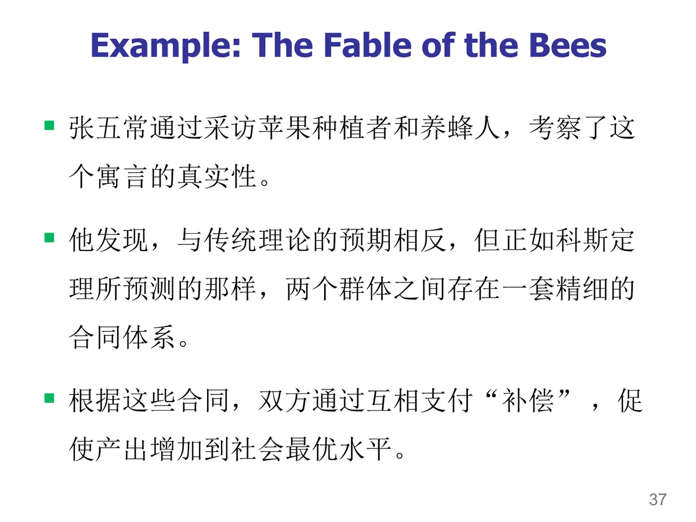
张五常去采访华盛顿州的苹果种植者和养蜂人，检验这个寓言是否成立。
他发现：与传统理论的预期相反、正如科斯定理所预测，两个群体之间存在一套精细的合同体系——果园主付钱给养蜂人（或反过来），用「补偿」把双方的产出推到社会最优水平。
不需要政府补贴，因为谈判的收益足够大、当事人足够少。这就是科斯定理的田间证据：理论预言失灵的地方，现实用合同补上了。顺带说一句，这也解释了为什么「补贴双方」的建议在纸上漂亮，在田间多余。
幻灯片原文 / 板书
Example: The Fable of the Bees --- 张五常通过采访苹果种植者和养蜂人，考察了这个寓言的真实性。 他发现，与传统理论的预期相反，但正如科斯定理所预测的那样，两个群体之间存在一套精细的合同体系。 根据这些合同，双方通过互相支付“补偿” ，促使产出增加到社会最优水平。
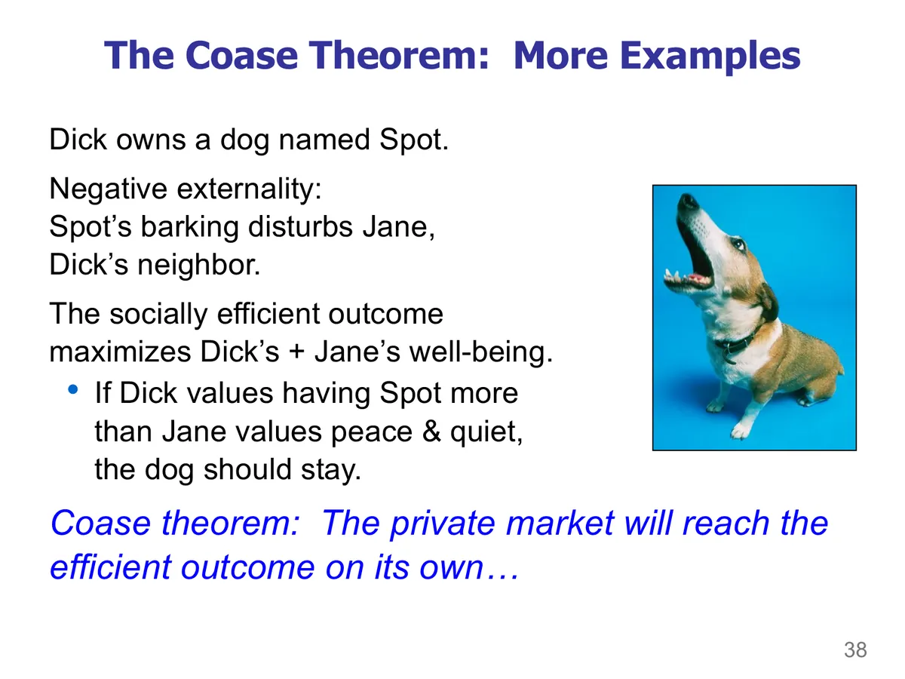
一个更小的例子。Dick 养了一条狗叫 Spot，狗叫打扰邻居 Jane——标准的负外部性。
社会有效率的结果是最大化 Dick 与 Jane 的福利之和，而不是让某一方满意。判断标准很简单：Dick 觉得有狗值多少，Jane 觉得清静值多少，谁的数字大，谁的要求就该被满足。
注意效率标准是「总和最大」，不是「谁有理」。所以效率的答案可能让你不舒服：狗叫很烦，但如果主人真的更在乎这条狗，让狗留下反而是有效率的。科斯定理说，私人市场会自己走到这个结果。
幻灯片原文 / 板书
The Coase Theorem: More Examples --- Dick owns a dog named Spot. Negative externality: Spot’s barking disturbs Jane, Dick’s neighbor. The socially efficient outcome maximizes Dick’s + Jane’s well-being. If Dick values having Spot more than Jane values peace & quiet, the dog should stay. Coase theorem: The private market will reach the efficient outcome on its own…
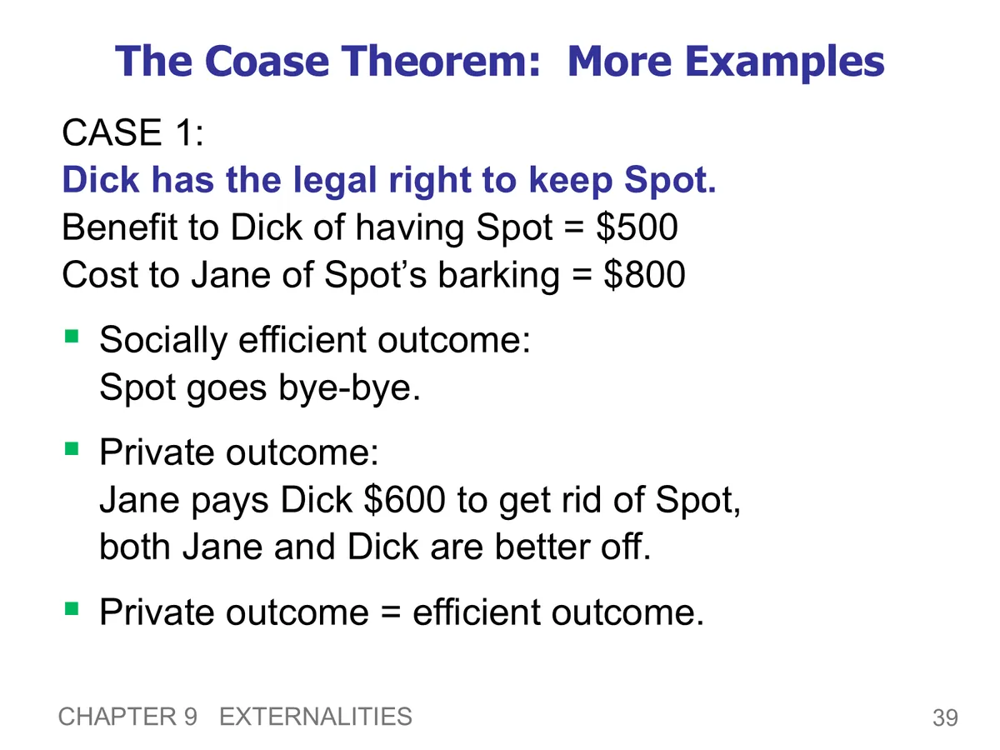
Case 1：Dick 有合法养狗权；Dick 的收益 $500，Jane 的成本 $800。
- 社会有效率：狗走（800 > 500，Jane 的痛苦更大）。
- 私人结果：Jane 付 Dick $600 让狗走。Jane 省下 800、只花 600，净赚 200；Dick 拿 600 而狗只值 500，净赚 100。
- 双方都变好，且私人结果 = 有效结果。
$600 只是谈判区间（500 到 800）里的一个点，换成 $700 结论不变——区间存在才是效率的保证，具体价格只决定 300 元的剩余怎么分。
换个价格验证一下：Jane 出 $750，她仍赚 50（800 − 750），Dick 仍赚 250（750 − 500），照样成交。只要出价落在 500 与 800 之间，双方都愿意，狗都会走。这就是「效率与分配分开」在最简单的两个人世界里的样子。
幻灯片原文 / 板书
CHAPTER 9 EXTERNALITIES --- The Coase Theorem: More Examples --- CASE 1: Dick has the legal right to keep Spot. Benefit to Dick of having Spot = $500 Cost to Jane of Spot’s barking = $800 Socially efficient outcome: Spot goes bye-bye. Private outcome: Jane pays Dick $600 to get rid of Spot, both Jane and Dick are better off. Private outcome = efficient outcome.
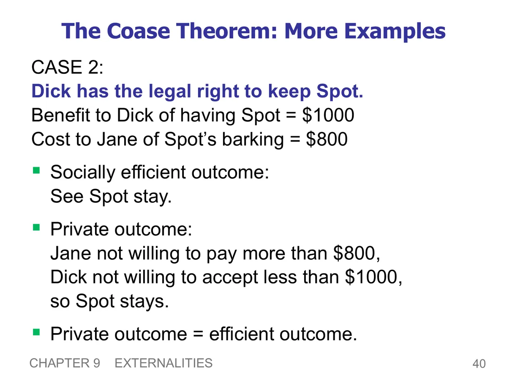
Case 2：Dick 仍有养狗权，但收益变成 $1000，Jane 的成本仍是 $800。
- 社会有效率：狗留（1000 > 800）。
- 私人结果：Jane 最多愿付 800，Dick 最少要 1000，谈不成，狗留下。
这里最容易错：把「没成交」当成市场失灵。恰恰相反——谈不成就是有效率的结果。如果 Jane 咬牙出 900 呢？她不会，900 已经超过她 800 的损失；真出了，社会反而亏 100。真正的失灵是「该走却没走」或「该留却被赶走」。
顺便注意 Case 2 的另一个含义：效率不需要交易发生。市场「什么都没发生」，恰恰是它做对了。
幻灯片原文 / 板书
CHAPTER 9 EXTERNALITIES --- The Coase Theorem: More Examples --- CASE 2: Dick has the legal right to keep Spot. Benefit to Dick of having Spot = $1000 Cost to Jane of Spot’s barking = $800 Socially efficient outcome: See Spot stay. Private outcome: Jane not willing to pay more than $800, Dick not willing to accept less than $1000, so Spot stays. Private outcome = efficient outcome.
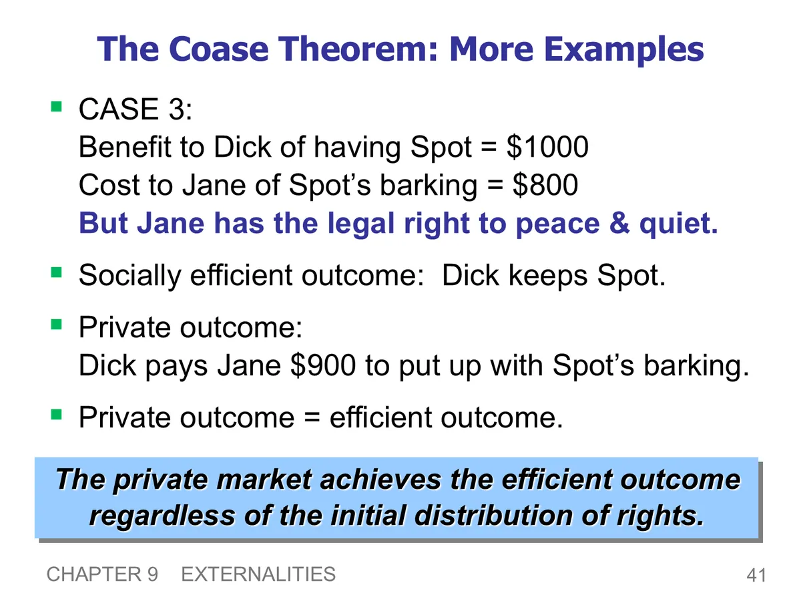
Case 3：收益 $1000、成本 $800，但这次Jane 拥有享受清静的权利。
- 社会有效率：仍是狗留。
- 私人结果：Dick 付 Jane $900，买下「忍受狗叫」的权利。Jane 收 900 > 800，Dick 付 900 < 1000，双赢。
把三个 Case 并排看：权利从 Dick 转到 Jane，效率结果没变（Case 1 狗走，Case 2、3 狗留，都与效率一致），但谁付钱、付多少变了：Case 1 是 Jane 付，Case 3 是 Dick 付。
这就是「结果与初始分配无关，但分配后果不同」——一句话里藏了两个命题，考试常在这里设陷阱。
幻灯片原文 / 板书
CHAPTER 9 EXTERNALITIES --- The Coase Theorem: More Examples --- CASE 3: Benefit to Dick of having Spot = $1000 Cost to Jane of Spot’s barking = $800 But Jane has the legal right to peace & quiet. Socially efficient outcome: Dick keeps Spot. Private outcome: Dick pays Jane $900 to put up with Spot’s barking. Private outcome = efficient outcome. --- The private market achieves the efficient outcome regardless of the initial distribution of rights.
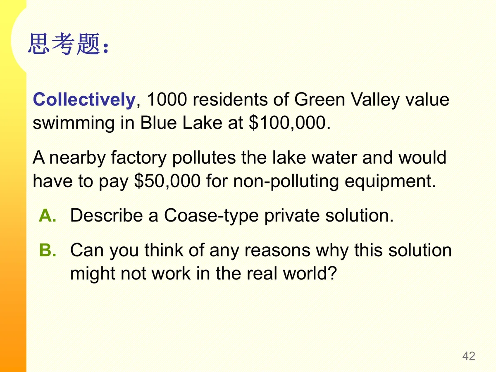
思考题。Green Valley 的 1000 名居民把在 Blue Lake 游泳的价值估为 $100,000；附近工厂污染湖水，装无污染设备要 $50,000。
- A：描述一个科斯式的私人解决方案。
- B：想想现实里它为什么可能行不通。
A 的思路：先算净收益，100,000 − 50,000 = 50,000，为正，所以有效率的结果是装设备；居民凑一笔介于 50,000 与 100,000 之间的钱给工厂即可。
B 的答案在下一页，但你大概已经想到了：一千个人，怎么凑钱？
幻灯片原文 / 板书
思考题： --- Collectively, 1000 residents of Green Valley value swimming in Blue Lake at $100,000. A nearby factory pollutes the lake water and would have to pay $50,000 for non-polluting equipment. A. Describe a Coase-type private solution. B. Can you think of any reasons why this solution might not work in the real world? --- 42
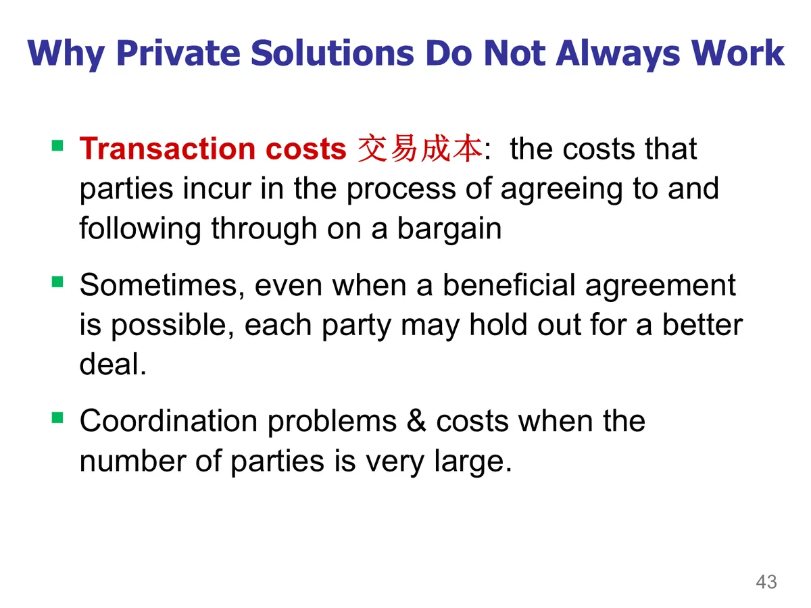
B 问的答案是交易成本（transaction costs）：各方为达成并执行协议而付出的成本——律师费、谈判时间、监督履约、打官司。
三个典型障碍：
科斯定理的两个前提，在这里同时被打破。注意交易成本不只包括钱，还包括时间和信任——一千个互不相识的居民，光是把人召集齐就已经很贵。
幻灯片原文 / 板书
Why Private Solutions Do Not Always Work --- Transaction costs 交易成本: the costs that parties incur in the process of agreeing to and following through on a bargain Sometimes, even when a beneficial agreement is possible, each party may hold out for a better deal. Coordination problems & costs when the number of parties is very large.
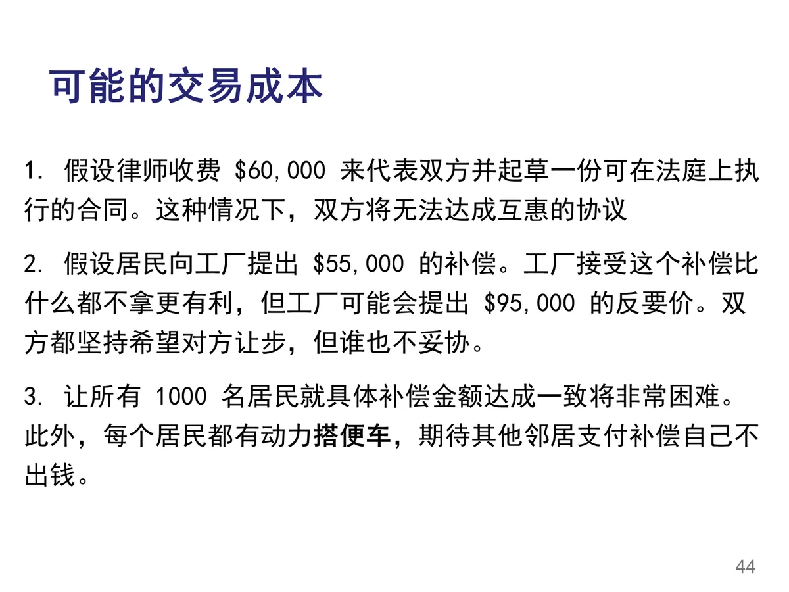
把上一题的数字代进去，看它怎么坏掉：
- 律师代表双方起草一份可在法庭执行的合同要 $60,000——超过净收益 $50,000，这份协议根本不该签。
- 居民出价 $55,000，工厂还价 $95,000；双方都等对方让步，谁也不动，僵住。
- 1000 名居民就具体金额达成一致极难，而且每个人都有动力搭便车：指望邻居出钱，自己白享清水。
三条各自独立，任何一条都足以让科斯式的谈判失败。所以「交易成本低、人数少」不是装饰性假设，而是定理能否落地的全部内容。
幻灯片原文 / 板书
1. 假设律师收费 $60,000 来代表双方并起草一份可在法庭上执行的合同。这种情况下，双方将无法达成互惠的协议 2. 假设居民向工厂提出 $55,000 的补偿。工厂接受这个补偿比什么都不拿更有利，但工厂可能会提出 $95,000 的反要价。双方都坚持希望对方让步，但谁也不妥协。 3. 让所有 1000 名居民就具体补偿金额达成一致将非常困难。此外，每个居民都有动力搭便车，期待其他邻居支付补偿自己不出钱。 --- 可能的交易成本
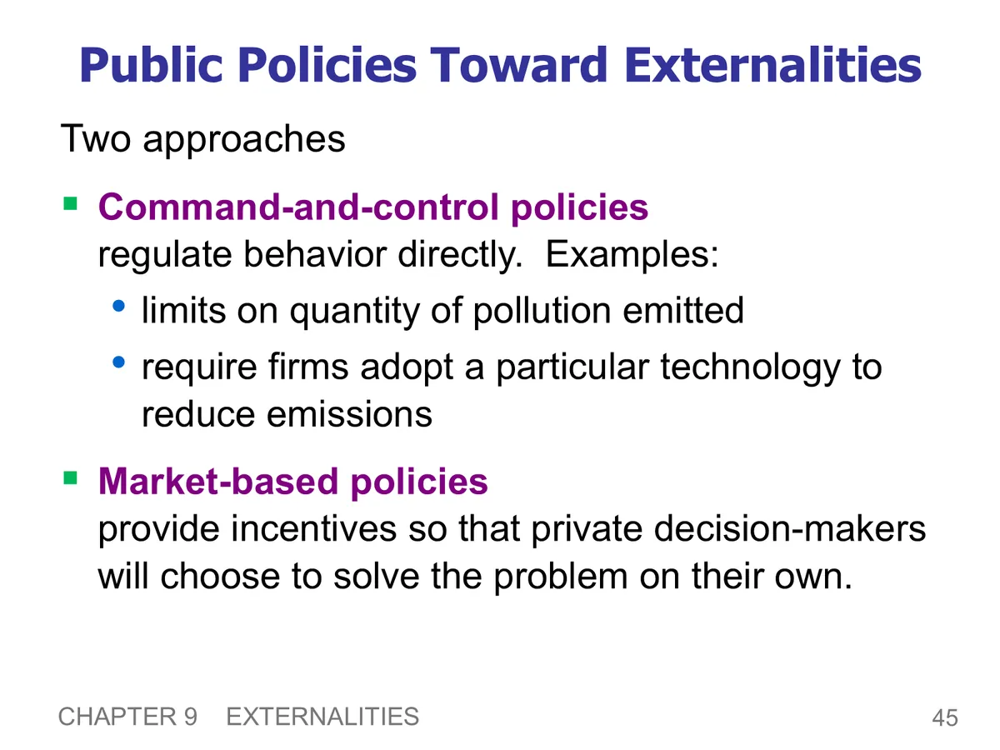
公共政策两条路线：
- 命令-控制型（command-and-control）：直接管制行为。例：规定排污数量上限；强制企业采用某种减排技术。
- 市场型（market-based）：不命令行为，而是提供激励，让私人决策者自己选择怎么解决问题。
差别不在「管不管」，而在信息在谁手里：政府知道目标（总排放要降多少），企业知道成本（自己减一吨要花多少）。哪一种更省，取决于谁的信息被用上了。
这也是本讲后半段的主线：好的环境政策不是「更严」，而是「把正确的信息变成正确的行为」。
幻灯片原文 / 板书
CHAPTER 9 EXTERNALITIES --- Public Policies Toward Externalities --- Two approaches Command-and-control policies regulate behavior directly. Examples: limits on quantity of pollution emitted require firms adopt a particular technology to reduce emissions Market-based policies provide incentives so that private decision-makers will choose to solve the problem on their own.
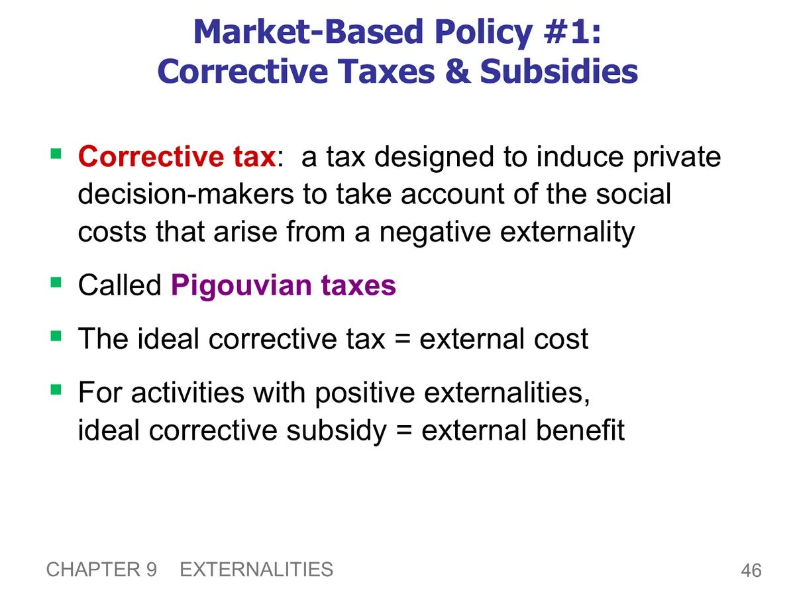
市场型工具之一：矫正税与补贴（corrective taxes and subsidies）。
- 矫正税：为诱导私人决策者把负外部性带来的社会成本算进去而设的税，也叫庇古税。
- 理想矫正税 = 外部成本；对应地，正外部性的理想矫正补贴 = 外部收益。
这是本章唯一需要背的公式。记住它的逻辑：税额不是「政府想收多少」，而是「外部成本有多大」的度量。
顺便说，庇古税还有「双重红利」的说法：既纠正了产量，又筹到了钱，可以用来减其他税。但那是公共财政的话题，本讲只关心第一重。
幻灯片原文 / 板书
CHAPTER 9 EXTERNALITIES --- Market-Based Policy #1: Corrective Taxes & Subsidies --- Corrective tax: a tax designed to induce private decision-makers to take account of the social costs that arise from a negative externality Called Pigouvian taxes The ideal corrective tax = external cost For activities with positive externalities, ideal corrective subsidy = external benefit
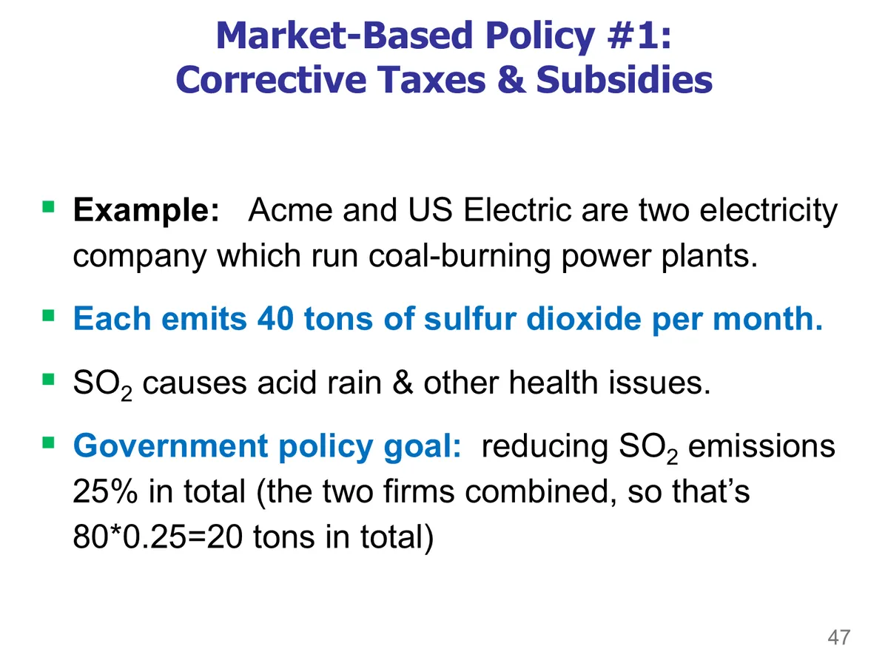
案例：Acme 与 US Electric 两家燃煤电厂，各排 40 吨/月的二氧化硫（SO₂），合计 80 吨。SO₂ 造成酸雨和其他健康问题。
政策目标：总排放削减 25%。算一下：80 × 25% = 20 吨，两家合计从 80 吨降到 60 吨。
注意 25% 是相对基线的削减比例，不是绝对量；而且它只管「总量降多少」，不管「谁来降」——这个「不管」正是后面成本差异的来源，也是三种工具拉开差距的地方。
再确认一下数字口径：80 吨是两家的月排放总量，削减 25% 后允许排放 60 吨。所有后续计算都以「月」为单位，别把吨和吨/月混着用。
幻灯片原文 / 板书
Market-Based Policy #1: Corrective Taxes & Subsidies --- Example: Acme and US Electric are two electricity company which run coal-burning power plants. Each emits 40 tons of sulfur dioxide per month. SO2 causes acid rain & other health issues. Government policy goal: reducing SO2 emissions 25% in total (the two firms combined, so that’s 80*0.25=20 tons in total)
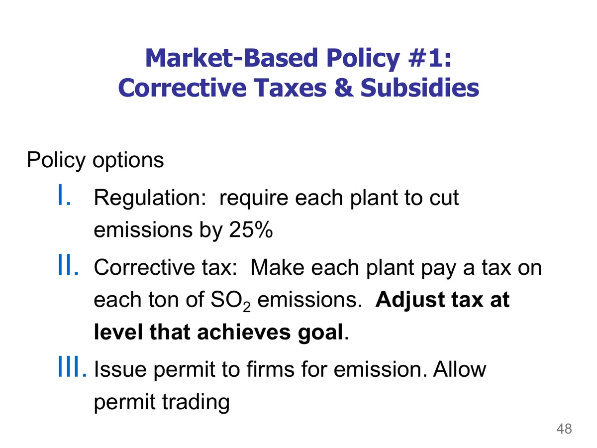
三种政策选项：
- 管制：要求每家电厂各削减 25%（各减 10 吨）。
- 矫正税：按每吨 SO₂ 排放征税，把税率调到刚好达标。
- 排污许可 + 交易：给企业发排放许可证，并允许它们互相买卖。
目标相同（减 20 吨），工具不同。判断标准只有一个：达标的总成本谁更低。
先记住一个隐含前提：三种工具都需要政府知道「减多少」，区别在于它们对「谁减、怎么减」的处理方式——一个直接规定，两个用价格或数量去引导。
幻灯片原文 / 板书
Market-Based Policy #1: Corrective Taxes & Subsidies --- Policy options Regulation: require each plant to cut emissions by 25% Corrective tax: Make each plant pay a tax on each ton of SO2 emissions. Adjust tax at level that achieves goal. Issue permit to firms for emission. Allow permit trading
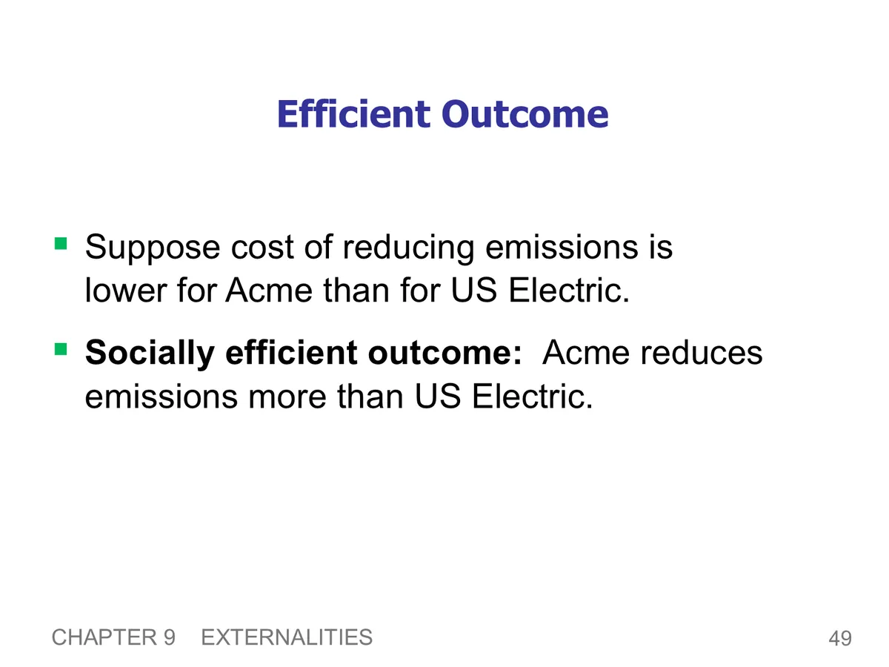
有效率的结果长什么样？关键假设：Acme 的减排成本低于 US Electric。
那么社会最优的安排是让 Acme 减得比 US Electric 多——同样是减 20 吨，交给便宜的一方多做，总成本最低。
这一页是后面所有比较的基准：目标相同、成本不同，谁减谁省。任何不区分成本的政策，都会把钱浪费在「让贵的人去减」上。
用数字感受一下：如果 Acme 每吨 $100、USE 每吨 $200，那么让 Acme 减 20 吨、USE 减 0 吨，总成本 $2,000；两家各减 10 吨，就要 $3,000。差的 $1,000 是纯粹的浪费。
幻灯片原文 / 板书
CHAPTER 9 EXTERNALITIES --- Efficient Outcome --- Suppose cost of reducing emissions is lower for Acme than for US Electric. Socially efficient outcome: Acme reduces emissions more than US Electric.
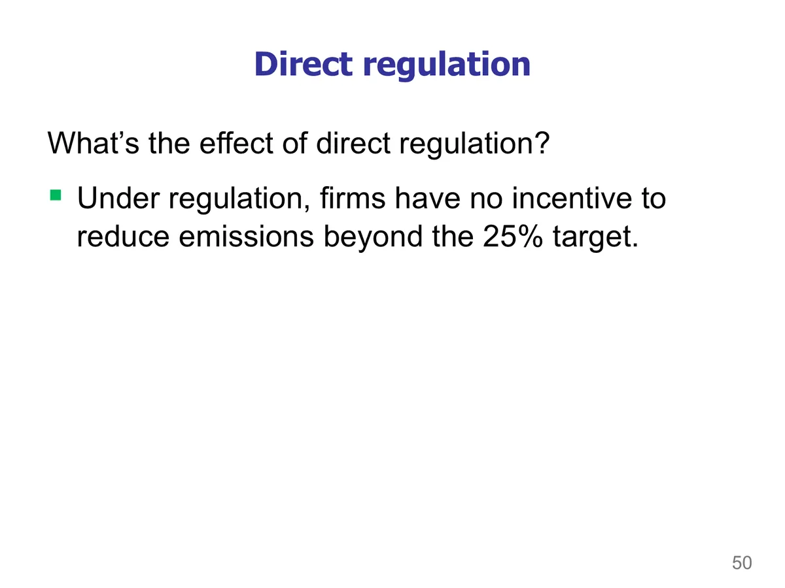
直接管制的问题：要求每家各减 25%，两家都只减到 25% 就停手——没有任何激励减得更多。
哪怕 Acme 减一吨只花 $100、US Electric 要花 $200，制度也不允许 Acme「替」它减，因为管制规定的是每家自己的排放上限。
这就是命令-控制型的死穴：它规定行为，不规定成本。目标达成了，但可能是用最贵的方式达成的。
注意这不等于管制一无是处：当污染极其危险、需要立刻禁止时，管制反而最快最可靠。它的弱点是成本，不是效果。
幻灯片原文 / 板书
Direct regulation --- What’s the effect of direct regulation? Under regulation, firms have no incentive to reduce emissions beyond the 25% target.
矫正税的效果：排一吨 SO₂ 就要交一份税，于是矫正税就是「排污权的价格」。
把排污税理解成向政府购买排污的权利，税率就是这种权利的价格。这句话把「税」翻译成了「价格」，下一页跟排污权交易一比就通了——两者都是在给「排污」定价，只是一个由税务局定，一个由市场定。
一旦这样看，很多疑问就消失了：企业不是「被罚款」，而是「为使用一种稀缺资源付费」，和买原料没有本质区别。
幻灯片原文 / 板书
Market-Based Policy #1: Corrective Taxes --- What is the effect of a corrective tax? If you pollute one unit of SO2, you need to pay the tax So, the corrective tax is simply a “price” on the right to pollute. 你可以把支付排污税或者排污费看做向政府够买排污的权利，于是税率就是够吗这种权利的价格
税为什么能激励减排？因为只要减排一吨的成本低于税率，企业就会一直减下去——减一吨，省一份税，划算；减到「边际减排成本 = 税率」为止。
已知 Acme 的减排成本比 US Electric 低，那么Acme 更可能去减排：它减一吨便宜，省下的税却一样多。
税不需要知道谁便宜——它让便宜的人自己算出来该多减。这就是市场型工具的信息优势：政府只需要定一个价，剩下的分散信息由企业自己处理。
幻灯片原文 / 板书
Market-Based Policy #1: Corrective Taxes --- 你可以把支付排污税或者排污费看做向政府够买排污的权利，于是税率就是够吗这种权利的价格 A tax on emissions gives firms incentive to continue reducing emissions as long as the cost of doing so is less than the tax. 已知ACME的减排成本比US electric要低 那么谁更有可能去减少排放（“减排”）？
排污权交易的数字版。目标：80 吨降到 60 吨。减排成本：Acme $100/吨，US Electric $200/吨。
若按管制各减 10 吨：
- Acme：(10 吨) × ($100/吨) = $1,000
- US Electric：(10 吨) × ($200/吨) = $2,000
- 达标总成本 = $3,000
换成表格更清楚：
| 企业 | 削减量 | 单位成本 | 成本 |
|---|---|---|---|
| Acme | 10 吨 | $100 | $1,000 |
| US Electric | 10 吨 | $200 | $2,000 |
| 合计 | 20 吨 | — | $3,000 |
记住这 3,000。下一页用许可证把同一件事再做一遍，你会看到它掉到 2,000。
还要看清这 3,000 的结构：两家各减 10 吨，平均每吨成本 (1,000 + 2,000) / 20 = $150/吨。而真正最省的方案是让 Acme 全减，平均只要 $100/吨，总成本 $2,000。差的 $1,000 完全来自「任务分配错了」，不是技术不行。
幻灯片原文 / 板书
CHAPTER 9 EXTERNALITIES --- Market-Based Policy #2: Tradable Pollution Permits --- Acme, US Electric each emit 40 tons SO2, total of 80 tons. Goal: reduce emissions by 25% (to 60 tons/month) Suppose cost of reducing emissions is $100/ton for Acme, $200/ton for US Electric. If regulation requires each firm to reduce 10 tons, cost to Acme: (10 tons) x ($100/ton) = $1,000 cost to USE: (10 tons) x ($200/ton) = $2,000 total cost of achieving goal = $3,000
换成许可证。政府发 60 张许可证，每张允许持有者排放 1 吨 SO₂（总量因此锁定在 60 吨），两家各发 30 张，并允许交易。
每家有三个选项：
- 用满 30 张，排 30 吨；
- 排少于 30 吨，把余下的证卖掉；
- 买别人的证，排超过 30 吨。
注意总量是行政锁定的：不管怎么交易，排放都不会超过 60 吨。这一点与税不同——税只锁价格，数量随企业反应浮动。
还有个细节容易漏：初始的 30 张怎么分，只影响谁先富，不影响最终谁减多少。因为只要允许交易，许可证最后一定会流向「减排成本高于证价」的那家企业手里。分配归分配，效率归效率，这又是科斯那句话的翻版。
幻灯片原文 / 板书
CHAPTER 10 EXTERNALITIES --- Market-Based Policy #2: Tradable Pollution Permits --- Tradable permits: issue 60 permits, each allows its bearer one ton of SO2 emissions (so total emissions = 60 tons) give 30 permits to each firm establish market for trading permits Each firm can choose among these options: emit 30 tons of SO2, using all its permits emit < 30 tons, sell unused permits buy additional permits so it can emit > 30 tons
设许可证市价 $150。为什么是这个价？因为对 Acme 来说减排只要 $100，卖证能收 $150，所以愿意卖；对 US Electric 来说减排要 $200，买证只花 $150，所以愿意买。价格落在两者之间，双方都有动力交易。
- Acme：花 $2,000 减 20 吨（20 × $100），手里剩 30 − 20 = 10 张，按 $150 卖给 US Electric 得 $1,500，净成本 $500。
- US Electric：用满 30 张，再买 10 张付 $1,500，排放 40 吨，净成本 $1,500。
- 达标总成本 = 500 + 1,500 = $2,000，比管制的 $3,000 省 $1,000。
（课件把「40 吨」误写成「400 吨」，是笔误，按 40 吨理解。）省下的这 $1,000，正是「让便宜的人多减」的价值。
幻灯片原文 / 板书
Market-Based Policy #2: Tradable Pollution Permits --- Suppose market price of permit = $150 Acme spends $2,000 to cut emissions by 20, has 30-20=10 unused permits, sells them to US electric for $150x10=$1500 net cost to Acme: $2000 - $1500 = 500 US Electric Used up all the 30 permits and buys 10 permits from ACEM at $1500, emissions = 400 tons net cost to USE: $1,500 Total cost of achieving goal: $2,000
为什么便宜？因为减排成本低的公司卖证，成本高的公司买证，减排自动集中到成本最低的企业身上。
许可证市场干的事和税一样——把减排任务分配给最便宜的人；但方式不同：税定价格，许可证定数量。
一句话对比：税说「每吨 $150，你们自己决定排多少」；许可证说「只许排 60 吨，价格你们自己谈」。前者政府收钱，后者钱在企业之间转，政府一分不收——这也是许可证在政治上更受欢迎的原因之一。
幻灯片原文 / 板书
CHAPTER 10 EXTERNALITIES --- Market-Based Policy #2: Tradable Pollution Permits --- A system of tradable pollution permits achieves goal at lower cost than regulation. Firms with low cost of reducing pollution sell whatever permits they can. Firms with high cost of reducing pollution buy permits. Result: Pollution reduction is concentrated among those firms with lowest costs.
现实中的许可证交易：
- 美国自 1995 年起交易 SO₂ 许可证（针对酸雨）。
- 1999 年起在美国东北部交易氮氧化物（NOx）许可证。
这两个年份常考，因为它们是「理论变成制度」的标志：经济学家在纸上画的那条需求曲线，真的被一个市场实现了。
为什么先拿 SO₂ 开刀？因为酸雨问题集中、排放量可以连续监测、电厂数量有限——三个条件正好对应科斯定理说的「当事人少、计量清楚、交易成本低」。
幻灯片原文 / 板书
CHAPTER 10 EXTERNALITIES --- Tradable Pollution Permits in the Real World --- SO2 permits traded in the U.S. since 1995. Nitrogen oxide permits traded in the northeastern U.S. since 1999.
税与许可证的关键区别，一句话：企业的排污需求曲线向下倾斜。
- 税提高价格，减少排污需求量。
- 许可证限制供给，效果相同，但机制是数量。
真正的分野在不确定性：当政策制定者不知道这条需求曲线的位置时，许可证能更精确地达到减排目标（数量确定，价格随行就市）；税能确定价格（成本确定），但数量会随需求波动。
用一句话记：要保数量，用许可证；要保成本，用税。这也是为什么欧盟碳市场用「总量+交易」，而有些国家偏好碳税。
幻灯片原文 / 板书
Corrective Taxes vs. Tradable Pollution Permits --- Like most demand curves, firms’ demand for the ability to pollute is a downward-sloping function of the “price” of polluting. A corrective tax raises this price and thus reduces the quantity of pollution firms demand. A tradable permits system restricts the supply of pollution rights, has the same effect as the tax. When policymakers do not know the position of this demand curve, the permits system achieves pollution reduction targets more precisely.
中国的实践：二氧化硫（SO₂）排放权交易。
SO₂ 是酸雨的主要污染物，中国从 2000 年代起试点交易。试点地区：
- 山西、山东：早期试点省份，参与主体是燃煤火电厂；
- 江苏太湖流域：重点控制化工行业与电厂的 SO₂ 排放。
机制：政府分配排放限额；排放低于限额可卖，需要多排则买。这就是上一页那套设计的中国版本。
选山西、山东有现实理由：燃煤电厂密集、排放集中，监管和计量都相对容易，正好符合「当事人少、可测、可执行」这三个条件。
幻灯片原文 / 板书
Tradable Pollution Permits in China --- 二氧化硫（SO₂）排放权交易 二氧化硫是导致酸雨的主要污染物，为了减少酸雨的影响，中国自2000年代起试点二氧化硫排放权交易。 试点地区： 山西省和山东省：作为早期试点省份，这些地区的燃煤火电厂成为交易的主要参与者。 江苏省太湖流域：重点控制化工行业和电厂的二氧化硫排放。 机制：企业根据政府分配的排放限额进行排放，如果企业的排放低于限额，可以将剩余的排放权出售；如果企业需要增加排放量，则需要购买其他企业的排放权。
碳排放权交易。为服务碳达峰、碳中和目标，中国 2011 年启动碳排放权交易试点，2021 年正式启动全国碳市场。
- 试点地区：北京、上海、广东、湖北、深圳、天津、重庆（2013 至 2014 年间率先运行）。
- 全国碳市场：2021 年启动，首批覆盖发电行业，涉及超过 2200 家企业。
注意顺序：先地方试点十年，再全国推开——这就是「摸着石头过河」在环境政策上的样子。
为什么首批只收发电行业？因为发电企业排放量大、数据好核（燃煤量可测），先把最难造假的部分管起来，再逐步扩围到钢铁、水泥等行业，这是典型的「先易后难」。
幻灯片原文 / 板书
Tradable Pollution Permits in China --- 碳排放权交易 为实现碳达峰和碳中和目标，中国于2011年启动了碳排放权交易试点并于2021年正式启动全国碳市场。 试点地区： 北京市、上海市、广东省、湖北省、深圳市、天津市、重庆市：这些地区在2013年至2014年期间率先试点碳排放权交易。 全国碳市场： 于2021年正式启动，首批覆盖发电行业，涉及超过2200家企业。
这一页的文字和 P60 重复（课件重复粘贴了 SO₂ 那段），我们借它把机制再往深里问一层，正好补上前面没讲的部分：
- 限额怎么分？ 按历史排放分配（祖父制）会奖励过去排得多的企业；按产出或基准线分配更中立。分配方式决定了谁是赢家。
- 交易为什么可能冷清？ 配额免费发放、企业预期未来更紧，宁可囤着不卖；没有活跃交易，价格信号就出不来。
- 跨省交易难：地方要保增长、保就业，不愿把排放额度让出去。
结论：许可证市场的前提是总量上限可信、配额可执行、交易不被行政阻断。三条缺一条，纸面上的效率就落不了地。
幻灯片原文 / 板书
Tradable Pollution Permits in China --- 二氧化硫（SO₂）排放权交易 背景：二氧化硫是导致酸雨的主要污染物，为了减少酸雨的影响，中国自2000年代起试点二氧化硫排放权交易。 试点地区： 山西省和山东省：作为早期试点省份，这些地区的燃煤火电厂成为交易的主要参与者。 江苏省太湖流域：重点控制化工行业和电厂的二氧化硫排放。 机制：企业根据政府分配的排放限额进行排放，如果企业的排放低于限额，可以将剩余的排放权出售；如果企业需要增加排放量，则需要购买其他企业的排放权。
货币外部性（pecuniary externality）。
到这里你可能有个感觉：是不是每个市场行为都有外部性？课件的例子很刁钻——几百万新消费者进场买 iPhone，市场需求右移、价格上涨；如果你原本打算买，那么这些人确实让你多付了钱，看起来就是「他们对你造成了负外部性」。
这个直觉一半对、一半错：你确实受损了，但受损的方式和污染完全不同——污染没有经过任何价格，而这里你多付的每一分钱都经过了价格。下一页给名字。
幻灯片原文 / 板书
Pecuniary Externalities --- 到目前为止的讲课内容,你们当中可能有些人会有这种感觉,每个市场行为都存在外部性。 例如,如果数百万新消费者进入市场并决定购买iPhone,市场需求将向右移动,价格将会上涨。 如果你原本计划购买iPhone, 那么这些消费者刚才对你造成了负面外部性!
这类影响有专门名字：货币外部性——市场交易通过市场价格影响其他人。
它的定义性特征就是「只通过价格起作用」。而这个特征直接决定了最重要的结论：货币外部性不会导致市场无效率。
为什么？因为价格变了，所有人都在新的价格下重新做最优决策：你嫌贵可以少买，卖家见价高可以多供，市场自动调整到新的均衡。没有任何人的成本被漏算，只是均衡点移动了。记住这个转折：定义 → 机制 → 结论，三步连起来才算真懂。
幻灯片原文 / 板书
Pecuniary Externalities --- 更多人购买某种商品从而对他人造成负面市场影响的情况被称为货币外部性。 当市场交易通过市场价格影响其他人时, 就会产生货币外部性 货币外部性的这一特点（其实就是它的定义），即仅通过价格发挥作用，是至关重要的。 这意味着货币外部性不会导致市场无效率。
对比着看就清楚了。
- 前面讲的正/负外部性会造成「错误」的均衡数量，因为它们带来的是没有反映在市场价格里的外部成本或收益。
- 货币外部性的影响全部体现在价格上：价格已经把「东西变贵了」这件事算进去了，买卖双方按新价格重新决策，数量不会错。
区别不在「有没有影响到别人」，而在影响是否经过价格。这是本讲最容易被忽略的一句话。
再补一个判据：问「受损者能不能通过市场行为避开」。能避开（少买、换替代品），多半是货币外部性；避不开（呼吸的空气、楼下的噪音），才是真外部性。
幻灯片原文 / 板书
我们前头讲的那些负的和正的外部性会导致"错误"的均衡数量 它们之所以会产生这种影响, 是因为它们造成了一种外部成本或外部收益,而这种成本或收益并未反映在市场价格中。 然而,对于货币外部性而言,任何外部影响都会反映在市场价格上。因此,市场价格已经将这些外部影响考虑在内, 从而不会导致无效率的均衡数量。 所以, 与其他类型的外部性不同,货币外部性不会造成市场无效率, 因为其影响已通过价格机制得到反映和纳入考虑。 --- Pecuniary Externalities
收尾。正因为影响完全体现在价格里，市场价格才正确反映了交易对整个社会的影响。
甚至可以更进一步：货币外部性对有效率的市场是必需的——东西变稀缺就该涨价，变充裕就该降价；如果价格不动，配置才会出错。
所以整个第 9 章的边界是这样划的：经过价格的影响，市场自己会处理；绕过价格的影响（真正的技术外部性），才需要税、补贴、产权或许可证。 下次看到「某人害我多花钱」的说法，先问一句：这笔钱是不是价格？
幻灯片原文 / 板书
正是因为它们的影响完全体现在价格中, 所以市场价格正确反映了市场交易对整个社会的影响。 我们甚至可以说, 货币外部性对于有效率的市场是必需的,因为随着商品变得更加稀缺或更加充足,它们的价格应该发生变化。 --- Pecuniary Externalities